Desarrollado por : Area de Testing PWST
Fecha y hora de inicio : 2023-01-12 12:44:31
Duracion : 0:12:49.156707
Resultado : Total 126，Correctos 65 ，Errores 61 ，Taza de resultado 51.59%
Resumen 51.59% Errores 61 Fallidos 0 Correctos 65 Test realizados 126
| Caso de Prueba | Total | Correctos | Fallido | Error | Detalles | Captura del error |
| ScriptAmarillo.Test: Script Amarillo | 126 | 65 | 0 | 61 | Detalles | |
test |
ft1_1: 2023-01-12 12:44:33,005 - root - INFO - Se abre el chrome
2023-01-12 12:44:34,056 - root - INFO - Entra a la URL
2023-01-12 12:44:34,191 - root - INFO - Maximiza la pantalla
Traceback (most recent call last):
File "C:\Users\PWST\AppData\Local\Programs\Python\Python311\Lib\site-packages\selenium\webdriver\remote\switch_to.py", line 87, in frame
frame_reference = self._driver.find_element(By.ID, frame_reference)
^^^^^^^^^^^^^^^^^^^^^^^^^^^^^^^^^^^^^^^^^^^^^^^^^
File "C:\Users\PWST\AppData\Local\Programs\Python\Python311\Lib\site-packages\selenium\webdriver\remote\webdriver.py", line 856, in find_element
return self.execute(Command.FIND_ELEMENT, {
^^^^^^^^^^^^^^^^^^^^^^^^^^^^^^^^^^^^
File "C:\Users\PWST\AppData\Local\Programs\Python\Python311\Lib\site-packages\selenium\webdriver\remote\webdriver.py", line 429, in execute
self.error_handler.check_response(response)
File "C:\Users\PWST\AppData\Local\Programs\Python\Python311\Lib\site-packages\selenium\webdriver\remote\errorhandler.py", line 243, in check_response
raise exception_class(message, screen, stacktrace)
selenium.common.exceptions.NoSuchElementException: Message: no such element: Unable to locate element: {"method":"css selector","selector":"[id="mainFrame"]"}
(Session info: chrome=108.0.5359.126)
Stacktrace:
Backtrace:
Ordinal0 [0x011CACD3+2075859]
Ordinal0 [0x0115EE61+1633889]
Ordinal0 [0x0105B7BD+571325]
Ordinal0 [0x0108AC2F+764975]
Ordinal0 [0x0108AE1B+765467]
Ordinal0 [0x010BD0F2+970994]
Ordinal0 [0x010A7364+881508]
Ordinal0 [0x010BB56A+963946]
Ordinal0 [0x010A7136+880950]
Ordinal0 [0x0107FEFD+720637]
Ordinal0 [0x01080F3F+724799]
GetHandleVerifier [0x0147EED2+2769538]
GetHandleVerifier [0x01470D95+2711877]
GetHandleVerifier [0x0125A03A+521194]
GetHandleVerifier [0x01258DA0+516432]
Ordinal0 [0x0116682C+1665068]
Ordinal0 [0x0116B128+1683752]
Ordinal0 [0x0116B215+1683989]
Ordinal0 [0x01176484+1729668]
BaseThreadInitThunk [0x763C00F9+25]
RtlGetAppContainerNamedObjectPath [0x77D57BBE+286]
RtlGetAppContainerNamedObjectPath [0x77D57B8E+238]
During handling of the above exception, another exception occurred:
Traceback (most recent call last):
File "C:\Users\PWST\AppData\Local\Programs\Python\Python311\Lib\site-packages\selenium\webdriver\remote\switch_to.py", line 90, in frame
frame_reference = self._driver.find_element(By.NAME, frame_reference)
^^^^^^^^^^^^^^^^^^^^^^^^^^^^^^^^^^^^^^^^^^^^^^^^^^^
File "C:\Users\PWST\AppData\Local\Programs\Python\Python311\Lib\site-packages\selenium\webdriver\remote\webdriver.py", line 856, in find_element
return self.execute(Command.FIND_ELEMENT, {
^^^^^^^^^^^^^^^^^^^^^^^^^^^^^^^^^^^^
File "C:\Users\PWST\AppData\Local\Programs\Python\Python311\Lib\site-packages\selenium\webdriver\remote\webdriver.py", line 429, in execute
self.error_handler.check_response(response)
File "C:\Users\PWST\AppData\Local\Programs\Python\Python311\Lib\site-packages\selenium\webdriver\remote\errorhandler.py", line 243, in check_response
raise exception_class(message, screen, stacktrace)
selenium.common.exceptions.NoSuchElementException: Message: no such element: Unable to locate element: {"method":"css selector","selector":"[name="mainFrame"]"}
(Session info: chrome=108.0.5359.126)
Stacktrace:
Backtrace:
Ordinal0 [0x011CACD3+2075859]
Ordinal0 [0x0115EE61+1633889]
Ordinal0 [0x0105B7BD+571325]
Ordinal0 [0x0108AC2F+764975]
Ordinal0 [0x0108AE1B+765467]
Ordinal0 [0x010BD0F2+970994]
Ordinal0 [0x010A7364+881508]
Ordinal0 [0x010BB56A+963946]
Ordinal0 [0x010A7136+880950]
Ordinal0 [0x0107FEFD+720637]
Ordinal0 [0x01080F3F+724799]
GetHandleVerifier [0x0147EED2+2769538]
GetHandleVerifier [0x01470D95+2711877]
GetHandleVerifier [0x0125A03A+521194]
GetHandleVerifier [0x01258DA0+516432]
Ordinal0 [0x0116682C+1665068]
Ordinal0 [0x0116B128+1683752]
Ordinal0 [0x0116B215+1683989]
Ordinal0 [0x01176484+1729668]
BaseThreadInitThunk [0x763C00F9+25]
RtlGetAppContainerNamedObjectPath [0x77D57BBE+286]
RtlGetAppContainerNamedObjectPath [0x77D57B8E+238]
During handling of the above exception, another exception occurred:
Traceback (most recent call last):
File "C:\xampp\htdocs\Versiones\automatizaciones\AutoPWST\ScriptAmarillo\testCase\ScriptAmarillo.py", line 307, in test
self.driver.switch_to.frame("mainFrame")
File "C:\Users\PWST\AppData\Local\Programs\Python\Python311\Lib\site-packages\selenium\webdriver\remote\switch_to.py", line 92, in frame
raise NoSuchFrameException(frame_reference)
selenium.common.exceptions.NoSuchFrameException: Message: mainFrame
|
|
||||
test_000: Ingresa a la base de datos |
pt1_2: 2023-01-12 12:44:37,306 - root - INFO - Escribe el usuario
2023-01-12 12:44:37,416 - root - INFO - Escribe la contraseña
2023-01-12 12:44:37,509 - root - INFO - Se dio clic en el boton ingresar
2023-01-12 12:44:38,772 - root - INFO - Ejecutar Enterprise
2023-01-12 12:44:42,823 - root - INFO - Cambia entre pestañas
|
|
||||
test_001: Ingresa a pantalla Objetivos Diarios |
pt1_3: 2023-01-12 12:44:58,511 - root - INFO - Abre la pantalla de Objetivos Diarios
2023-01-12 12:44:59,078 - root - INFO - La pantalla ejecutada es Lista de precios.
2023-01-12 12:44:59,078 - root - INFO - Captura: C:\xampp\htdocs\Versiones\automatizaciones\AutoPWST\ScriptAmarillo\report\img screen：20230112_12_44_59.png
2023-01-12 12:44:59,602 - root - INFO - Se presiona el boton 'Refrescar', para crear un nuevo registro igual al anterior.
2023-01-12 12:45:09,815 - root - INFO - Se presiona el boton 'Nuevo', para crear un nuevo registro.
|

|
||||
test_002: Agregar Objetivos Diarios |
pt1_4: 2023-01-12 12:45:10,415 - root - INFO - Se abrio la pantalla para el ingreso de un registro nuevo.
2023-01-12 12:45:10,455 - root - INFO - El campo 'Vendedor' si se encuentra visible.
2023-01-12 12:45:10,491 - root - INFO - El campo 'Fecha' si se encuentra visible.
2023-01-12 12:45:10,532 - root - INFO - El campo 'Efectividad %' si se encuentra visible.
2023-01-12 12:45:12,236 - root - INFO - Ingresa la efectividad del nuevo registro
2023-01-12 12:45:14,238 - root - INFO - Captura: C:\xampp\htdocs\Versiones\automatizaciones\AutoPWST\ScriptAmarillo\report\img screen：20230112_12_45_14.png
2023-01-12 12:45:14,802 - root - INFO - Se hace el cambio de pestaña para continuar con el registro nuevo
2023-01-12 12:45:15,409 - root - INFO - Se presiona el boton 'Nuevo', para crear un nuevo registro.
2023-01-12 12:45:15,996 - root - INFO - El campo 'Grupo Política' si se encuentra visible.
2023-01-12 12:45:16,041 - root - INFO - El campo 'Tipo Objetivo' si se encuentra visible.
2023-01-12 12:45:16,079 - root - INFO - El campo 'Tipo Unidad' si se encuentra visible.
2023-01-12 12:45:16,116 - root - INFO - El campo 'Objetivo Cantidad' si se encuentra visible.
2023-01-12 12:45:16,154 - root - INFO - El campo 'Objetivo Cobertura' si se encuentra visible.
2023-01-12 12:45:18,646 - root - INFO - Ingresa el Objetivo Cantidad del nuevo registro
2023-01-12 12:45:18,797 - root - INFO - Ingresa el Objetivo Cobertura del nuevo registro
2023-01-12 12:45:18,917 - root - INFO - Se da clic en el boton Guardar; se debe crear un nuevo registro.
2023-01-12 12:45:19,182 - root - INFO - Se da clic en el boton Guardar; se debe crear un nuevo registro.
|
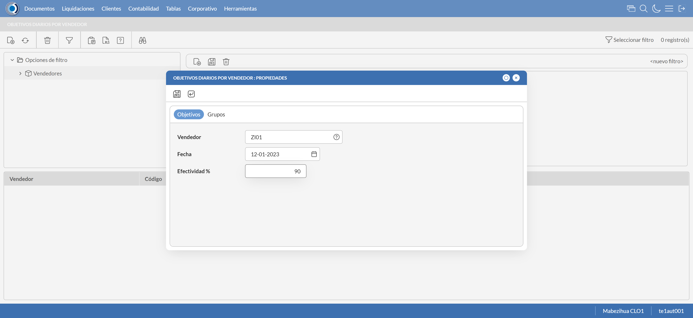 | ||||
test_003: Repetir Registro Objetivos Diarios |
pt1_5: 2023-01-12 12:45:19,515 - root - INFO - Se presiona el boton 'Refrescar', para crear un nuevo registro igual al anterior.
2023-01-12 12:45:19,670 - root - INFO - Se presiona el boton 'Nuevo', para crear un nuevo registro igual al anterior.
2023-01-12 12:45:20,263 - root - INFO - Se abrio la pantalla para el ingreso de un registro nuevo.
2023-01-12 12:45:20,298 - root - INFO - El campo 'Vendedor' si se encuentra visible.
2023-01-12 12:45:20,332 - root - INFO - El campo 'Fecha' si se encuentra visible.
2023-01-12 12:45:20,366 - root - INFO - El campo 'Efectividad %' si se encuentra visible.
2023-01-12 12:45:22,103 - root - INFO - Ingresa la efectividad del nuevo registro
2023-01-12 12:45:22,191 - root - INFO - Se da clic en el boton Guardar; se debe crear un nuevo registro.
2023-01-12 12:45:23,194 - root - INFO - Captura: C:\xampp\htdocs\Versiones\automatizaciones\AutoPWST\ScriptAmarillo\report\img screen：20230112_12_45_23.png
2023-01-12 12:45:29,175 - root - INFO - Se presiona el boton 'Cerrar', para cerrar el mensaje de duplicidad de llave primaria
2023-01-12 12:45:30,179 - root - INFO - Captura: C:\xampp\htdocs\Versiones\automatizaciones\AutoPWST\ScriptAmarillo\report\img screen：20230112_12_45_30.png
2023-01-12 12:45:31,200 - root - INFO - Se presiona el boton 'Cerrar', para cerrar el mensaje de duplicidad de llave primaria
2023-01-12 12:45:31,323 - root - INFO - Se presiona el boton 'Cerrar', para cerrar la ventana
|
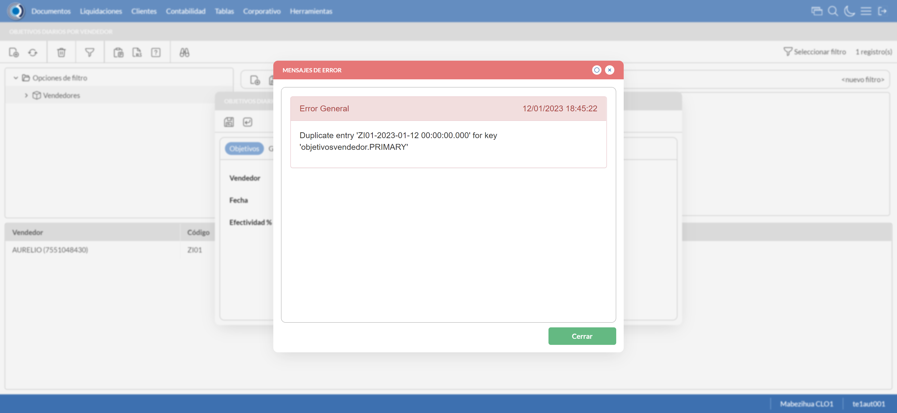 | ||||
test_004: Modifica Objetivos Diarios |
ft1_6: 2023-01-12 12:45:31,491 - root - INFO - Se presiona el boton 'Refrescar', para crear un nuevo registro igual al anterior.
2023-01-12 12:45:33,133 - root - INFO - Se da clic en el registro creado, para proceder a modificarlo.
2023-01-12 12:45:33,808 - root - INFO - Ingresa la efectividad del nuevo registro
2023-01-12 12:45:35,810 - root - INFO - Captura: C:\xampp\htdocs\Versiones\automatizaciones\AutoPWST\ScriptAmarillo\report\img screen：20230112_12_45_35.png
2023-01-12 12:45:36,386 - root - INFO - Se hace el cambio de pestaña para continuar con el registro nuevo
2023-01-12 12:45:37,593 - root - INFO - Se da clic en el registro creado, para proceder a modificarlo.
2023-01-12 12:45:40,438 - root - ERROR - No se encontró el registro de tipo Objetivo, revise si el xpath sigue siendo el mismo, para mas detalles del error consulte el reporte
2023-01-12 12:45:40,440 - root - INFO - Captura: C:\xampp\htdocs\Versiones\automatizaciones\AutoPWST\ScriptAmarillo\report\img screen：20230112_12_45_40.png
Traceback (most recent call last):
File "C:\xampp\htdocs\Versiones\automatizaciones\AutoPWST\ScriptAmarillo\testCase\ScriptAmarillo.py", line 486, in test_004
Cierra_ayuda_grupos.click()
File "C:\Users\PWST\AppData\Local\Programs\Python\Python311\Lib\site-packages\selenium\webdriver\remote\webelement.py", line 88, in click
self._execute(Command.CLICK_ELEMENT)
File "C:\Users\PWST\AppData\Local\Programs\Python\Python311\Lib\site-packages\selenium\webdriver\remote\webelement.py", line 396, in _execute
return self._parent.execute(command, params)
^^^^^^^^^^^^^^^^^^^^^^^^^^^^^^^^^^^^^
File "C:\Users\PWST\AppData\Local\Programs\Python\Python311\Lib\site-packages\selenium\webdriver\remote\webdriver.py", line 429, in execute
self.error_handler.check_response(response)
File "C:\Users\PWST\AppData\Local\Programs\Python\Python311\Lib\site-packages\selenium\webdriver\remote\errorhandler.py", line 243, in check_response
raise exception_class(message, screen, stacktrace)
selenium.common.exceptions.ElementClickInterceptedException: Message: element click intercepted: Element <span class="ui-window-button-close"></span> is not clickable at point (1019, 145). Other element would receive the click: <div id="pglocker" class="lockerui" title="trabajando..." style="display: block;">...</div>
(Session info: chrome=108.0.5359.126)
Stacktrace:
Backtrace:
Ordinal0 [0x011CACD3+2075859]
Ordinal0 [0x0115EE61+1633889]
Ordinal0 [0x0105B7BD+571325]
Ordinal0 [0x01091499+791705]
Ordinal0 [0x0108F4AC+783532]
Ordinal0 [0x0108D0AB+774315]
Ordinal0 [0x0108BD37+769335]
Ordinal0 [0x01081C76+728182]
Ordinal0 [0x010A731C+881436]
Ordinal0 [0x010815BF+726463]
Ordinal0 [0x010A7534+881972]
Ordinal0 [0x010BB56A+963946]
Ordinal0 [0x010A7136+880950]
Ordinal0 [0x0107FEFD+720637]
Ordinal0 [0x01080F3F+724799]
GetHandleVerifier [0x0147EED2+2769538]
GetHandleVerifier [0x01470D95+2711877]
GetHandleVerifier [0x0125A03A+521194]
GetHandleVerifier [0x01258DA0+516432]
Ordinal0 [0x0116682C+1665068]
Ordinal0 [0x0116B128+1683752]
Ordinal0 [0x0116B215+1683989]
Ordinal0 [0x01176484+1729668]
BaseThreadInitThunk [0x763C00F9+25]
RtlGetAppContainerNamedObjectPath [0x77D57BBE+286]
RtlGetAppContainerNamedObjectPath [0x77D57B8E+238]
|
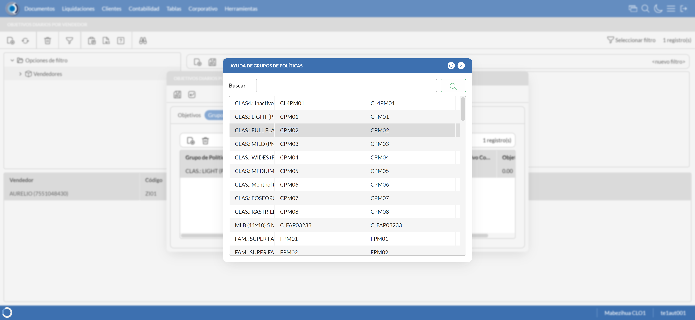 | ||||
test_005: Elimina Objetivos Diarios |
ft1_7: 2023-01-12 12:45:44,280 - root - ERROR - No se encontró el botón Refrescar, revise si el xpath sigue siendo el mismo, para mas detalles del error consulte el reporte
2023-01-12 12:45:44,283 - root - INFO - Captura: C:\xampp\htdocs\Versiones\automatizaciones\AutoPWST\ScriptAmarillo\report\img screen：20230112_12_45_44.png
2023-01-12 12:45:50,761 - root - INFO - Se presiona el boton 'Cerrar', para cerrar la ventana modal.
2023-01-12 12:45:56,122 - root - INFO - Se presiona el boton 'Cerrar', para cerrar la ventana modal.
2023-01-12 12:45:56,232 - root - INFO - Se presiona el boton 'Cerrar', para cerrar la pantalla.
Traceback (most recent call last):
File "C:\xampp\htdocs\Versiones\automatizaciones\AutoPWST\ScriptAmarillo\testCase\ScriptAmarillo.py", line 580, in test_005
raise Exception()
Exception
|
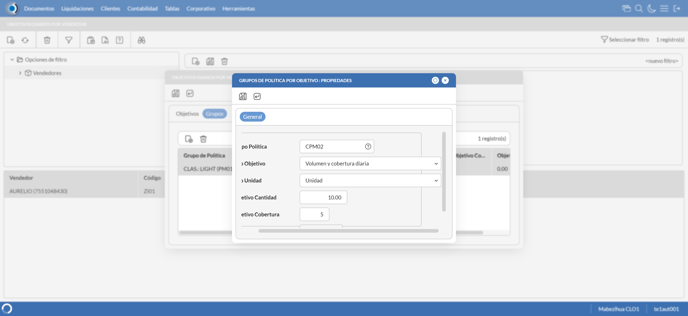 | ||||
test_006: Ingresa a pantalla Pop Ups |
pt1_8: 2023-01-12 12:45:57,316 - root - INFO - Abre la pantalla de PopUps
2023-01-12 12:45:58,579 - root - INFO - La pantalla ejecutada es PopUps.
2023-01-12 12:45:59,580 - root - INFO - Captura: C:\xampp\htdocs\Versiones\automatizaciones\AutoPWST\ScriptAmarillo\report\img screen：20230112_12_45_59.png
2023-01-12 12:46:01,248 - root - INFO - Se ordenó por codigo.
2023-01-12 12:46:11,488 - root - INFO - Se presiona el boton 'Nuevo', para crear un nuevo registro.
|
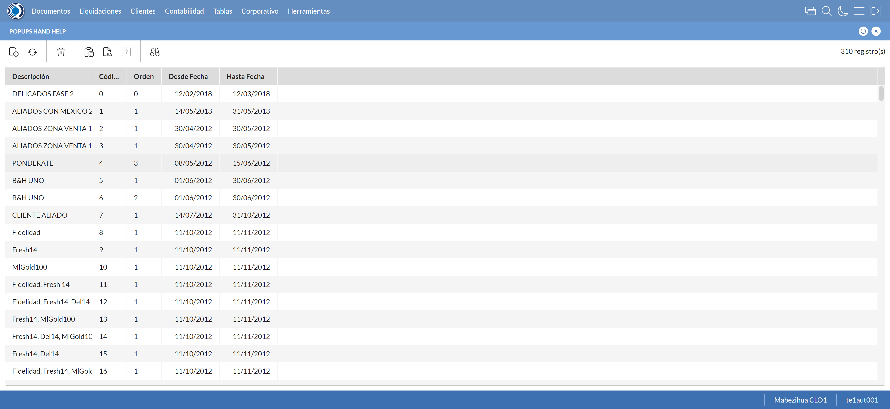 | ||||
test_007: Agregar Pop Ups |
pt1_9: 2023-01-12 12:46:12,584 - root - INFO - Se abrio la pantalla para el ingreso de un registro nuevo.
2023-01-12 12:46:12,623 - root - INFO - El campo 'Codigo' si se encuentra visible.
2023-01-12 12:46:12,663 - root - INFO - El campo 'Orden' si se encuentra visible.
2023-01-12 12:46:12,700 - root - INFO - El campo 'Activo' si se encuentra visible.
2023-01-12 12:46:12,737 - root - INFO - El campo 'Descrición' si se encuentra visible.
2023-01-12 12:46:12,775 - root - INFO - El campo 'Modo Visualización' si se encuentra visible.
2023-01-12 12:46:12,814 - root - INFO - El campo 'Tipo Popup' si se encuentra visible.
2023-01-12 12:46:12,851 - root - INFO - El campo 'Fecha Desde' si se encuentra visible.
2023-01-12 12:46:12,888 - root - INFO - El campo 'Fecha Hasta' si se encuentra visible.
2023-01-12 12:46:12,925 - root - INFO - El campo 'Texto' si se encuentra visible.
2023-01-12 12:46:12,962 - root - INFO - El campo 'Seleccione Imagen' si se encuentra visible.
2023-01-12 12:46:13,026 - root - INFO - Ingresa el codigo del nuevo registro
2023-01-12 12:46:13,134 - root - INFO - Ingresa la orden del nuevo registro
2023-01-12 12:46:14,317 - root - INFO - Hizo click en el checkbox Activo
2023-01-12 12:46:14,552 - root - INFO - Ingresa la descripción del nuevo registro
2023-01-12 12:46:14,963 - root - INFO - Se dió click en la opción Pantalla Held.
2023-01-12 12:46:15,972 - root - INFO - Se dió doble click en el registro de Tipo Pop Up.
2023-01-12 12:46:16,588 - root - INFO - Ingresa el texto del nuevo registro
2023-01-12 12:46:17,590 - root - INFO - Captura: C:\xampp\htdocs\Versiones\automatizaciones\AutoPWST\ScriptAmarillo\report\img screen：20230112_12_46_17.png
2023-01-12 12:46:18,182 - root - INFO - Se da clic en el boton Guardar; se debe crear un nuevo registro.
|

|
||||
test_008: Repetir Registro Pop Ups |
pt1_10: 2023-01-12 12:46:18,466 - root - INFO - Se presiona el boton 'Refrescar', para crear un nuevo registro igual al anterior.
2023-01-12 12:46:19,267 - root - INFO - Se presiona el boton 'Nuevo', para crear un nuevo registro igual al anterior.
2023-01-12 12:46:19,835 - root - INFO - Se abrio la pantalla para el ingreso de un registro nuevo.
2023-01-12 12:46:19,869 - root - INFO - El campo 'Codigo' si se encuentra visible.
2023-01-12 12:46:19,903 - root - INFO - El campo 'Orden' si se encuentra visible.
2023-01-12 12:46:19,937 - root - INFO - El campo 'Activo' si se encuentra visible.
2023-01-12 12:46:19,970 - root - INFO - El campo 'Descrición' si se encuentra visible.
2023-01-12 12:46:20,004 - root - INFO - El campo 'Modo Visualización' si se encuentra visible.
2023-01-12 12:46:20,043 - root - INFO - El campo 'Tipo Popup' si se encuentra visible.
2023-01-12 12:46:20,077 - root - INFO - El campo 'Fecha Desde' si se encuentra visible.
2023-01-12 12:46:20,110 - root - INFO - El campo 'Fecha Hasta' si se encuentra visible.
2023-01-12 12:46:20,144 - root - INFO - El campo 'Texto' si se encuentra visible.
2023-01-12 12:46:20,178 - root - INFO - El campo 'Seleccione Imagen' si se encuentra visible.
2023-01-12 12:46:20,244 - root - INFO - Ingresa el codigo del nuevo registro
2023-01-12 12:46:20,334 - root - INFO - Ingresa la orden del nuevo registro
2023-01-12 12:46:21,503 - root - INFO - Hizo click en el checkbox Activo
2023-01-12 12:46:21,776 - root - INFO - Ingresa la descripción del nuevo registro
2023-01-12 12:46:22,162 - root - INFO - Se dió click en la opción Pantalla Hand Held.
2023-01-12 12:46:23,211 - root - INFO - Se dió doble click en el registro de Tipo PopUp.
2023-01-12 12:46:23,658 - root - INFO - Ingresa el texto del nuevo registro
2023-01-12 12:46:23,734 - root - INFO - Se da clic en el boton Guardar; NO se debe crear un nuevo registro.
2023-01-12 12:46:24,736 - root - INFO - Captura: C:\xampp\htdocs\Versiones\automatizaciones\AutoPWST\ScriptAmarillo\report\img screen：20230112_12_46_24.png
2023-01-12 12:46:30,688 - root - INFO - Se presiona el boton 'Cerrar', para cerrar el mensaje de duplicidad de llave primaria
2023-01-12 12:46:31,690 - root - INFO - Captura: C:\xampp\htdocs\Versiones\automatizaciones\AutoPWST\ScriptAmarillo\report\img screen：20230112_12_46_31.png
2023-01-12 12:46:32,483 - root - INFO - Se presiona el boton 'Cerrar', para cerrar el mensaje de duplicidad de llave primaria
2023-01-12 12:46:32,642 - root - INFO - Se presiona el boton 'Cerrar', para cerrar la ventana
|
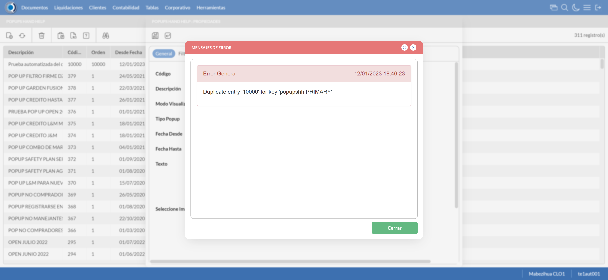 | ||||
test_009: Modifica Pop Ups |
pt1_11: 2023-01-12 12:46:32,758 - root - INFO - Se presiona el boton 'Refrescar', para proceder a modificar el registro.
2023-01-12 12:46:34,772 - root - INFO - Se dió dos veces click en el encabezado para modificar el orden de los registros.
2023-01-12 12:46:37,030 - root - INFO - Se da clic en el registro creado, para proceder a modificarlo.
2023-01-12 12:46:37,752 - root - INFO - Se modifica el contenido del campo Orden
2023-01-12 12:46:38,894 - root - INFO - Hizo click en el checkbox activo
2023-01-12 12:46:39,194 - root - INFO - Se modifica el contenido del campo Descripción
2023-01-12 12:46:39,603 - root - INFO - Se dió click en la opción Ambos.
2023-01-12 12:46:40,868 - root - INFO - Se dió doble click en el registro de Tipo PopUp.
2023-01-12 12:46:41,393 - root - INFO - Se modifica el contenido del campo Texto
2023-01-12 12:46:42,394 - root - INFO - Captura: C:\xampp\htdocs\Versiones\automatizaciones\AutoPWST\ScriptAmarillo\report\img screen：20230112_12_46_42.png
2023-01-12 12:46:42,962 - root - INFO - Se da clic en el boton Guardar; se debe modificar la informacion del registro.
|
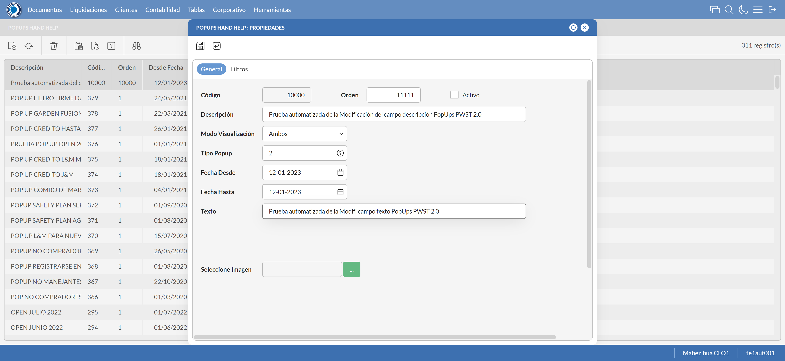 | ||||
test_010: Elimina PopUps |
pt1_12: 2023-01-12 12:46:43,383 - root - INFO - Se presiona el boton 'Refrescar', para proceder a eliminar el registro.
2023-01-12 12:46:45,071 - root - INFO - Se da clic en el registro creado, para proceder a eliminarlo.
2023-01-12 12:46:46,182 - root - INFO - Se presiona el boton 'Eliminar', para eliminar el registro.
2023-01-12 12:46:46,185 - root - INFO - Captura: C:\xampp\htdocs\Versiones\automatizaciones\AutoPWST\ScriptAmarillo\report\img screen：20230112_12_46_46.png
2023-01-12 12:46:46,801 - root - INFO - Se confirma el eliminado del registro
2023-01-12 12:46:47,546 - root - INFO - Se presiona el boton 'Refrescar', para veriicar si el registro ha sido eliminado.
2023-01-12 12:46:48,301 - root - INFO - Se presiona el boton 'Cerrar', para cerrar la pantalla de Pop Ups.
|
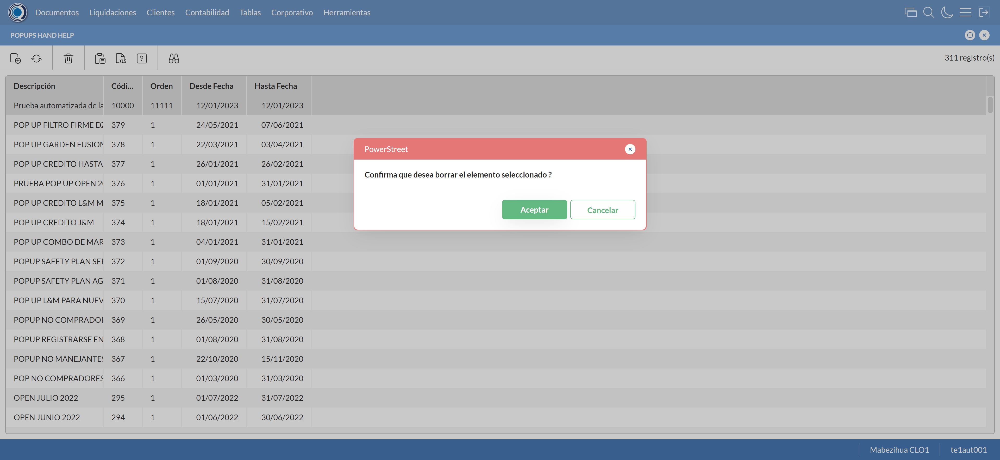 | ||||
test_011: Ingresa a pantalla Paquetes Formulario |
pt1_13: 2023-01-12 12:46:49,308 - root - INFO - Abre la pantalla de Paquetes de Formularios
2023-01-12 12:46:49,930 - root - INFO - Captura: C:\xampp\htdocs\Versiones\automatizaciones\AutoPWST\ScriptAmarillo\report\img screen：20230112_12_46_49.png
2023-01-12 12:46:50,378 - root - INFO - La pantalla ejecutada es Zonas de Ventas.
2023-01-12 12:47:01,010 - root - INFO - Se presiona el boton 'Nuevo', para crear un nuevo registro.
|
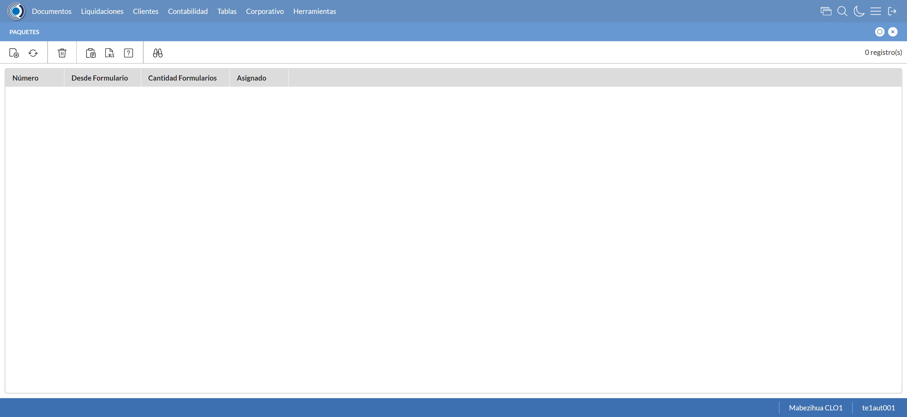 | ||||
test_012: Agregar Paquetes Formulario |
pt1_14: 2023-01-12 12:47:01,624 - root - INFO - Se abrio la pantalla para el ingreso de un registro nuevo.
2023-01-12 12:47:01,664 - root - INFO - El campo 'Número Paquete' si se encuentra visible.
2023-01-12 12:47:01,704 - root - INFO - El campo 'Formulario Inicial' si se encuentra visible.
2023-01-12 12:47:01,740 - root - INFO - El campo 'Cantidad Formularios' si se encuentra visible.
2023-01-12 12:47:02,794 - root - INFO - Captura: C:\xampp\htdocs\Versiones\automatizaciones\AutoPWST\ScriptAmarillo\report\img screen：20230112_12_47_02.png
2023-01-12 12:47:03,308 - root - INFO - Ingresa la cantidad de formularios del nuevo registro
2023-01-12 12:47:03,372 - root - INFO - Se da clic en el boton Guardar; se debe crear un nuevo registro.
|
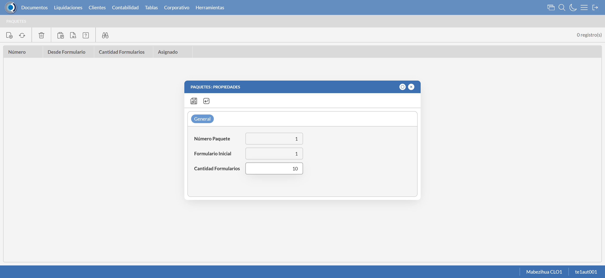 | ||||
test_013: Modifica Paquetes Formulario |
pt1_15: 2023-01-12 12:47:03,659 - root - INFO - Se presiona el boton 'Refrescar', para crear un nuevo registro igual al anterior.
2023-01-12 12:47:05,908 - root - INFO - Se da clic en el registro creado, para proceder a modificarlo.
2023-01-12 12:47:06,911 - root - INFO - Captura: C:\xampp\htdocs\Versiones\automatizaciones\AutoPWST\ScriptAmarillo\report\img screen：20230112_12_47_06.png
2023-01-12 12:47:07,452 - root - INFO - Se presiona el boton 'Cerrar', para cerrar la ventana
|
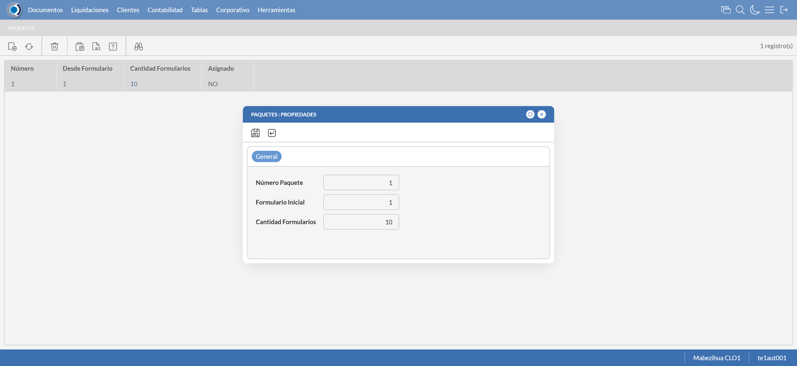 | ||||
test_014: Elimina Paquetes Formulario |
pt1_16: 2023-01-12 12:47:07,591 - root - INFO - Se presiona el boton 'Refrescar', para proceder a eliminar el registro.
2023-01-12 12:47:09,224 - root - INFO - Se da clic en el registro creado, para proceder a eliminarlo.
2023-01-12 12:47:09,341 - root - INFO - Se presiona el boton 'Eliminar', para eliminar el registro.
2023-01-12 12:47:10,344 - root - INFO - Captura: C:\xampp\htdocs\Versiones\automatizaciones\AutoPWST\ScriptAmarillo\report\img screen：20230112_12_47_10.png
2023-01-12 12:47:10,877 - root - INFO - Se confirma el eliminado del registro
2023-01-12 12:47:11,073 - root - INFO - Se presiona el boton 'Refrescar', para crear un nuevo registro igual al anterior.
2023-01-12 12:47:11,239 - root - INFO - Se presiona el boton 'Cerrar', para cerrar la pantalla de Categorias Fiscales.
|
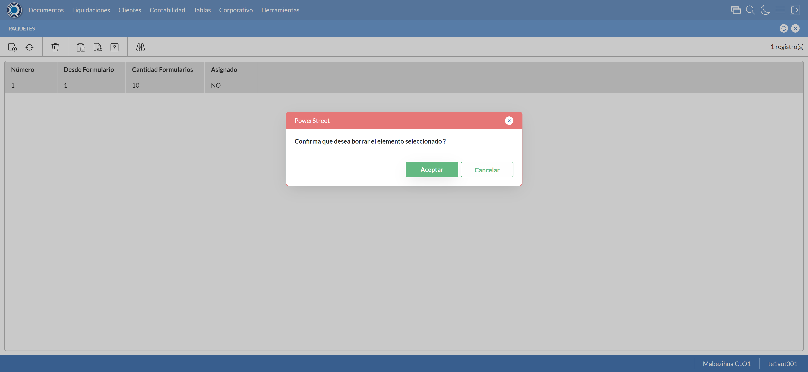 | ||||
test_015: Ingresa a pantalla Perfiles Comision |
pt1_17: 2023-01-12 12:47:12,229 - root - INFO - Abre la pantalla de Perfiles de Comisión
2023-01-12 12:47:12,795 - root - INFO - La pantalla ejecutada es Perfiles de Comisión.
2023-01-12 12:47:12,795 - root - INFO - Captura: C:\xampp\htdocs\Versiones\automatizaciones\AutoPWST\ScriptAmarillo\report\img screen：20230112_12_47_12.png
2023-01-12 12:47:23,480 - root - INFO - Se presiona el boton 'Nuevo', para crear un nuevo registro.
|

|
||||
test_016: Agregar Perfiles Comision |
pt1_18: 2023-01-12 12:47:24,104 - root - INFO - Se abrio la pantalla para el ingreso de un registro nuevo.
2023-01-12 12:47:24,154 - root - INFO - El campo 'Codigo' si se encuentra visible.
2023-01-12 12:47:24,195 - root - INFO - El campo 'Descrición' si se encuentra visible.
2023-01-12 12:47:24,232 - root - INFO - El campo 'Porcentaje Global' si se encuentra visible.
2023-01-12 12:47:24,268 - root - INFO - El campo 'Con impuesto' si se encuentra visible.
2023-01-12 12:47:24,305 - root - INFO - El campo 'Comisión Repartidor' si se encuentra visible.
2023-01-12 12:47:24,367 - root - INFO - Ingresa el codigo del nuevo registro
2023-01-12 12:47:24,482 - root - INFO - Ingresa la descripción del nuevo registro
2023-01-12 12:47:24,566 - root - INFO - Ingresa el Porcentaje Global del nuevo registro
2023-01-12 12:47:24,661 - root - INFO - Se hizó click en el Checkbox Con impuesto
2023-01-12 12:47:24,727 - root - INFO - Se hizó click en el checkbox Comisión Repartidor
2023-01-12 12:47:25,729 - root - INFO - Captura: C:\xampp\htdocs\Versiones\automatizaciones\AutoPWST\ScriptAmarillo\report\img screen：20230112_12_47_25.png
2023-01-12 12:47:26,288 - root - INFO - Se hace el cambio a la pestaña Topes para continuar con el registro nuevo
2023-01-12 12:47:26,905 - root - INFO - Se presiona el boton 'Nuevo', para crear un nuevo registro de Topes.
2023-01-12 12:47:27,472 - root - INFO - El campo 'Moneda' si se encuentra visible.
2023-01-12 12:47:27,508 - root - INFO - El campo 'Tope' si se encuentra visible.
2023-01-12 12:47:27,545 - root - INFO - El campo 'Porcentaje' si se encuentra visible.
2023-01-12 12:47:28,538 - root - INFO - Se dió doble click en el registro de Moneda.
2023-01-12 12:47:28,694 - root - INFO - Ingresa el tope del nuevo registro
2023-01-12 12:47:28,862 - root - INFO - Ingresa el Porcentaje del nuevo registro
2023-01-12 12:47:29,020 - root - INFO - Se da clic en el boton Guardar; se debe crear un nuevo registro de Topes.
2023-01-12 12:47:29,308 - root - INFO - Se hace el cambio a la pestaña Cuenta Articulo para continuar con el registro nuevo
2023-01-12 12:47:29,935 - root - INFO - Se presiona el boton 'Nuevo', para crear un nuevo registro de Cuenta Articulo.
2023-01-12 12:47:30,494 - root - INFO - El campo 'Cuenta' si se encuentra visible.
2023-01-12 12:47:30,532 - root - INFO - El campo 'Artículo' si se encuentra visible.
2023-01-12 12:47:30,564 - root - INFO - El campo 'Porcentaje' si se encuentra visible.
2023-01-12 12:47:32,112 - root - INFO - Se dió doble click en el registro de Cuenta.
2023-01-12 12:47:33,752 - root - INFO - Se dió doble click en el registro de Articulo.
2023-01-12 12:47:33,955 - root - INFO - Ingresa el Porcentaje del nuevo registro
2023-01-12 12:47:34,103 - root - INFO - Se da clic en el boton Guardar; se debe crear un nuevo registro de Cuenta Articulo.
2023-01-12 12:47:34,354 - root - INFO - Se hace el cambio a la pestaña Cuentas para continuar con el registro nuevo
2023-01-12 12:47:34,969 - root - INFO - Se presiona el boton 'Nuevo', para crear un nuevo registro de Cuentas.
2023-01-12 12:47:35,573 - root - INFO - El campo 'Cuenta' si se encuentra visible.
2023-01-12 12:47:35,620 - root - INFO - El campo 'Porcentaje' si se encuentra visible.
2023-01-12 12:47:37,689 - root - INFO - Se dió doble click en el registro de Cuenta.
2023-01-12 12:47:37,892 - root - INFO - Ingresa el Porcentaje del nuevo registro
2023-01-12 12:47:38,026 - root - INFO - Se da clic en el boton Guardar; se debe crear un nuevo registro de Cuentas.
2023-01-12 12:47:38,227 - root - INFO - Se hace el cambio a la pestaña Articulos para continuar con el registro nuevo
2023-01-12 12:47:38,883 - root - INFO - Se presiona el boton 'Nuevo', para crear un nuevo registro de Articulos.
2023-01-12 12:47:39,461 - root - INFO - El campo 'Artículo' si se encuentra visible.
2023-01-12 12:47:39,496 - root - INFO - El campo 'Porcentaje' si se encuentra visible.
2023-01-12 12:47:40,958 - root - INFO - Se dió doble click en el registro de Articulo.
2023-01-12 12:47:41,138 - root - INFO - Ingresa el Porcentaje del nuevo registro
2023-01-12 12:47:41,275 - root - INFO - Se da clic en el boton Guardar; se debe crear un nuevo registro de Articulos.
2023-01-12 12:47:41,483 - root - INFO - Se hace el cambio a la pestaña Tipos de Documento para continuar con el registro nuevo
2023-01-12 12:47:42,086 - root - INFO - Se presiona el boton 'Nuevo', para crear un nuevo registro de Tipo Documento.
2023-01-12 12:47:42,650 - root - INFO - El campo 'Tipo Documento' si se encuentra visible.
2023-01-12 12:47:42,687 - root - INFO - El campo 'Origen' si se encuentra visible.
2023-01-12 12:47:42,725 - root - INFO - El campo 'Signo' si se encuentra visible.
2023-01-12 12:47:42,763 - root - INFO - El campo 'Cancelado' si se encuentra visible.
2023-01-12 12:47:43,769 - root - INFO - Se dió doble click en el registro de Tipo Documento.
2023-01-12 12:47:46,248 - root - INFO - Se dió click en la opción Backoffice.
2023-01-12 12:47:46,716 - root - INFO - Se dió click en la opción Suma.
2023-01-12 12:47:46,842 - root - INFO - Se dió click en el checkbox Cancelado.
2023-01-12 12:47:46,991 - root - INFO - Se da clic en el boton Guardar; se debe crear un nuevo registro de Tipos Documento.
2023-01-12 12:47:47,710 - root - INFO - Se da clic en el boton Guardar; se debe crear un nuevo registro.
|
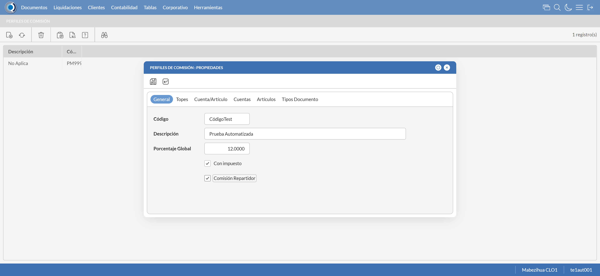 | ||||
test_017: Repetir Registro Perfiles Comision |
pt1_19: 2023-01-12 12:47:47,990 - root - INFO - Se presiona el boton 'Refrescar', para crear un nuevo registro igual al anterior.
2023-01-12 12:47:48,176 - root - INFO - Se presiona el boton 'Nuevo', para crear un nuevo registro igual al anterior.
2023-01-12 12:47:48,752 - root - INFO - Se abrio la pantalla para el ingreso de un registro nuevo.
2023-01-12 12:47:48,826 - root - INFO - El campo 'Codigo' si se encuentra visible.
2023-01-12 12:47:48,868 - root - INFO - El campo 'Descrición' si se encuentra visible.
2023-01-12 12:47:48,902 - root - INFO - El campo 'Porcentaje Global' si se encuentra visible.
2023-01-12 12:47:48,936 - root - INFO - El campo 'Con impuesto' si se encuentra visible.
2023-01-12 12:47:48,969 - root - INFO - El campo 'Comisión Repartidor' si se encuentra visible.
2023-01-12 12:47:49,029 - root - INFO - Ingresa el codigo del nuevo registro
2023-01-12 12:47:49,160 - root - INFO - Ingresa la descripción del nuevo registro
2023-01-12 12:47:49,239 - root - INFO - Ingresa el Porcentaje Global del nuevo registro
2023-01-12 12:47:49,313 - root - INFO - Se hizó click en el Checkbox Con impuesto
2023-01-12 12:47:49,377 - root - INFO - Se hizó click en el checkbox Comisión Repartidor
2023-01-12 12:47:49,444 - root - INFO - Se da clic en el boton Guardar; No se debe crear un nuevo registro.
2023-01-12 12:47:50,445 - root - INFO - Captura: C:\xampp\htdocs\Versiones\automatizaciones\AutoPWST\ScriptAmarillo\report\img screen：20230112_12_47_50.png
2023-01-12 12:47:56,332 - root - INFO - Se presiona el boton 'Cerrar', para cerrar el mensaje de duplicidad de llave primaria
2023-01-12 12:47:57,333 - root - INFO - Captura: C:\xampp\htdocs\Versiones\automatizaciones\AutoPWST\ScriptAmarillo\report\img screen：20230112_12_47_57.png
2023-01-12 12:47:58,066 - root - INFO - Se presiona el boton 'Cerrar', para cerrar el mensaje de duplicidad de llave primaria
2023-01-12 12:47:58,212 - root - INFO - Se presiona el boton 'Cerrar', para cerrar la ventana
|
|||||
test_018: Modifica Perfiles Comision |
pt1_20: 2023-01-12 12:47:58,363 - root - INFO - Se presiona el boton 'Refrescar', para proceder a modificar el registro.
2023-01-12 12:48:00,069 - root - INFO - Se da doble click en el registro creado, para proceder a modificarlo.
2023-01-12 12:48:00,756 - root - INFO - Se modifica el contenido del campo Descripción
2023-01-12 12:48:00,871 - root - INFO - Se modifica el contenido del campo Porcentaje Global
2023-01-12 12:48:00,942 - root - INFO - Se hizó click en el checkbox Con impuesto
2023-01-12 12:48:01,026 - root - INFO - Se hizó click en el checkbox Comisión Repartidor
2023-01-12 12:48:03,028 - root - INFO - Captura: C:\xampp\htdocs\Versiones\automatizaciones\AutoPWST\ScriptAmarillo\report\img screen：20230112_12_48_03.png
2023-01-12 12:48:03,602 - root - INFO - Se da clic en el boton Guardar; se debe modificar la informacion del registro.
|
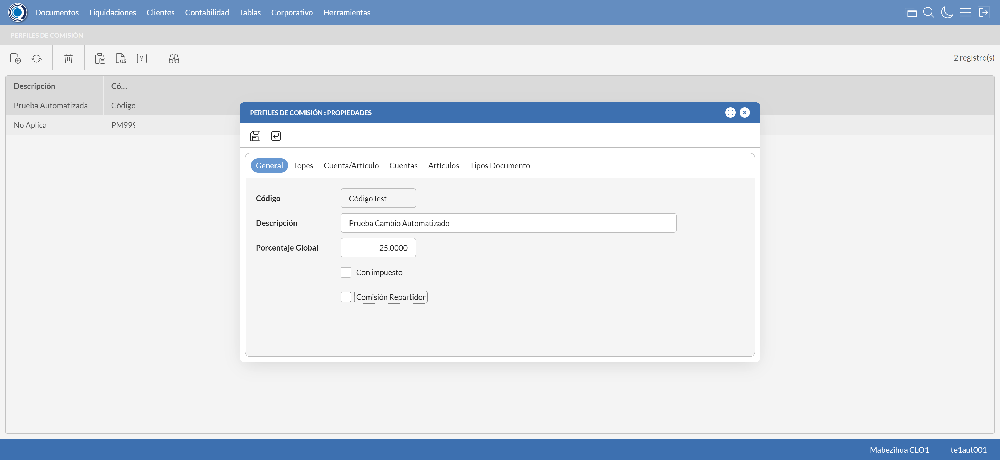 | ||||
test_019: Elimina Perfiles Comision |
pt1_21: 2023-01-12 12:48:03,988 - root - INFO - Se presiona el boton 'Refrescar', para proceder a eliminar el registro.
2023-01-12 12:48:05,712 - root - INFO - Se da clic en el registro creado, para proceder a eliminarlo.
2023-01-12 12:48:06,877 - root - INFO - Se da clic en la ventana de tope, para proceder a eliminarlo.
2023-01-12 12:48:08,028 - root - INFO - Se da clic en el tope creado, para proceder a eliminarlo.
2023-01-12 12:48:08,728 - root - INFO - Se da clic en la ventana cuenta/articulo, para proceder a eliminarlo.
2023-01-12 12:48:09,897 - root - INFO - Se da clic en la cuenta/articulo creado, para proceder a eliminarlo.
2023-01-12 12:48:10,591 - root - INFO - Se da clic en la ventana cuentas, para proceder a eliminarlo.
2023-01-12 12:48:11,725 - root - INFO - Se da clic en la cuenta creado, para proceder a eliminarlo.
2023-01-12 12:48:12,470 - root - INFO - Se da clic en la cuenta/articulo creado, para proceder a eliminarlo.
2023-01-12 12:48:13,615 - root - INFO - Se da clic en el articulo creado, para proceder a eliminarlo.
2023-01-12 12:48:14,334 - root - INFO - Se da clic en la ventana tipo documento, para proceder a eliminarlo.
2023-01-12 12:48:15,510 - root - INFO - Se da clic en el tipo de documento creado, para proceder a eliminarlo.
2023-01-12 12:48:15,753 - root - INFO - Se da clic en el boton Guardar; se debe crear un nuevo registro.
2023-01-12 12:48:16,333 - root - INFO - Se da clic en el registro creado, para proceder a eliminarlo.
2023-01-12 12:48:16,454 - root - INFO - Se presiona el boton 'Eliminar', para eliminar el registro.
2023-01-12 12:48:16,456 - root - INFO - Captura: C:\xampp\htdocs\Versiones\automatizaciones\AutoPWST\ScriptAmarillo\report\img screen：20230112_12_48_16.png
2023-01-12 12:48:17,043 - root - INFO - Se confirma el eliminado del registro
2023-01-12 12:48:17,259 - root - INFO - Se presiona el boton 'Refrescar', para verificar que el registro se ha eliminado.
2023-01-12 12:48:17,428 - root - INFO - Se presiona el boton 'Cerrar', para cerrar la pantalla de Perfiles de Comisión.
|
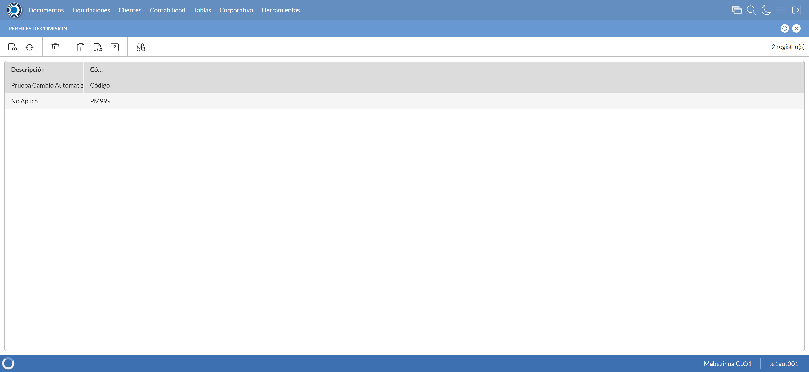 | ||||
test_020: Ingresa a pantalla Politicas de Venta |
ft1_22: 2023-01-12 12:48:18,493 - root - INFO - Abre la pantalla de Politicas de Venta
2023-01-12 12:48:19,052 - root - INFO - La pantalla ejecutada es Politicas de Venta
2023-01-12 12:48:20,054 - root - INFO - Captura: C:\xampp\htdocs\Versiones\automatizaciones\AutoPWST\ScriptAmarillo\report\img screen：20230112_12_48_20.png
2023-01-12 12:48:21,244 - root - INFO - Se da clic en el registro creado, para proceder a modificarlo.
2023-01-12 12:48:21,911 - root - INFO - Se hace el cambio a la pestaña Por Articulo para continuar con la eliminación del registro
2023-01-12 12:48:32,712 - root - INFO - Se presiona el boton 'Eliminar', para eliminar el registro de Por Articulo.
2023-01-12 12:48:32,822 - root - INFO - Se da clic en el boton Guardar; se debe modificar la informacion del registro.
2023-01-12 12:48:33,428 - root - INFO - Se da clic en el registro creado, para proceder a eliminarlo.
2023-01-12 12:48:34,534 - root - INFO - Se presiona el boton 'Eliminar', para eliminar el registro.
2023-01-12 12:48:34,535 - root - INFO - Captura: C:\xampp\htdocs\Versiones\automatizaciones\AutoPWST\ScriptAmarillo\report\img screen：20230112_12_48_34.png
2023-01-12 12:48:35,111 - root - INFO - Se confirma el eliminado del registro
2023-01-12 12:48:36,237 - root - ERROR - No se dio click el botón Refrescar, validar que la acción anterior haya finalizado,que el xpath sea el correcto o que la página no presente lentitud
2023-01-12 12:48:38,241 - root - INFO - Captura: C:\xampp\htdocs\Versiones\automatizaciones\AutoPWST\ScriptAmarillo\report\img screen：20230112_12_48_38.png
2023-01-12 12:48:44,300 - root - INFO - Se presiona el boton 'Cerrar', para cerrar la ventana modal.
2023-01-12 12:48:49,576 - root - INFO - Se presiona el boton 'Cerrar', para cerrar la pantalla.
Traceback (most recent call last):
File "C:\xampp\htdocs\Versiones\automatizaciones\AutoPWST\ScriptAmarillo\testCase\ScriptAmarillo.py", line 1171, in test_020
raise Exception()
Exception
|
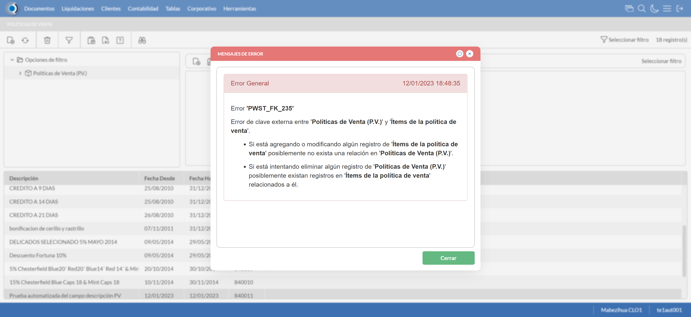 | ||||
test_021: Agregar Perfiles Politicas de Venta |
ft1_23: 2023-01-12 12:48:49,578 - root - ERROR - La pantalla anterior fallo por lo que esta no funcionara, para mas detalles del error consulte el reporte
Traceback (most recent call last):
File "C:\xampp\htdocs\Versiones\automatizaciones\AutoPWST\ScriptAmarillo\testCase\ScriptAmarillo.py", line 1221, in test_021
raise Exception()
Exception
|
|
||||
test_022: Repetir Registro Politicas de Venta |
ft1_24: 2023-01-12 12:48:49,580 - root - ERROR - La pantalla anterior fallo por lo que esta no funcionara, para mas detalles del error consulte el reporte
Traceback (most recent call last):
File "C:\xampp\htdocs\Versiones\automatizaciones\AutoPWST\ScriptAmarillo\testCase\ScriptAmarillo.py", line 1268, in test_022
raise Exception()
Exception
|
|
||||
test_023: Modifica Politicas de Venta |
ft1_25: 2023-01-12 12:48:49,581 - root - ERROR - La pantalla anterior fallo por lo que esta no funcionara, para mas detalles del error consulte el reporte
Traceback (most recent call last):
File "C:\xampp\htdocs\Versiones\automatizaciones\AutoPWST\ScriptAmarillo\testCase\ScriptAmarillo.py", line 1315, in test_023
raise Exception()
Exception
|
|
||||
test_024: Elimina Politicas de Venta |
ft1_26: 2023-01-12 12:48:49,584 - root - ERROR - La pantalla anterior fallo por lo que esta no funcionara, para mas detalles del error consulte el reporte
Traceback (most recent call last):
File "C:\xampp\htdocs\Versiones\automatizaciones\AutoPWST\ScriptAmarillo\testCase\ScriptAmarillo.py", line 1362, in test_024
raise Exception()
Exception
|
|
||||
test_025: Ingresa a pantalla Modelos de Liquidacion |
pt1_27: 2023-01-12 12:48:50,510 - root - INFO - Abre la pantalla de Modelos Liquidación
2023-01-12 12:48:51,061 - root - INFO - La pantalla ejecutada es Modelos Liquidacion.
2023-01-12 12:48:53,063 - root - INFO - Captura: C:\xampp\htdocs\Versiones\automatizaciones\AutoPWST\ScriptAmarillo\report\img screen：20230112_12_48_53.png
2023-01-12 12:48:53,684 - root - INFO - Se presiona el boton 'Nuevo', para crear un nuevo registro.
|

|
||||
test_026: Agregar Perfiles Modelos de Liquidacion |
pt1_28: 2023-01-12 12:48:54,265 - root - INFO - Se abrio la pantalla para el ingreso de un registro nuevo.
2023-01-12 12:48:54,336 - root - INFO - El campo 'Codigo' si se encuentra visible.
2023-01-12 12:48:54,383 - root - INFO - El campo 'Descrición' si se encuentra visible.
2023-01-12 12:48:54,423 - root - INFO - El campo 'Cantidad de días para generación de nueva liquidación' si se encuentra visible.
2023-01-12 12:48:54,464 - root - INFO - El campo 'Cantidad máxima de liquidaciones activas por vendedor' si se encuentra visible.
2023-01-12 12:48:54,504 - root - INFO - El campo 'Lista Precio valorización diferencias' por dif. tipo cambio' si se encuentra visible.
2023-01-12 12:48:54,546 - root - INFO - El campo 'Código del modelo de cobranza' si se encuentra visible.
2023-01-12 12:48:54,583 - root - INFO - El campo 'Mostrar advertencias' si se encuentra visible.
2023-01-12 12:48:54,626 - root - INFO - El campo 'Requerir cierre de liquidación en carga definitiva' si se encuentra visible.
2023-01-12 12:48:54,666 - root - INFO - El campo 'Permitir quitar documentos de liquidación cerrada' si se encuentra visible.
2023-01-12 12:48:54,709 - root - INFO - El campo 'Inhibir operaciones sobre liquidación cerrada' si se encuentra visible.
2023-01-12 12:48:54,752 - root - INFO - El campo 'Permitir cerrar liquidaciones vacias' si se encuentra visible.
2023-01-12 12:48:54,795 - root - INFO - El campo 'Inhibir carga si hay liquidaciones activas' si se encuentra visible.
2023-01-12 12:48:54,854 - root - INFO - El campo 'Solicitar fecha de cierre' si se encuentra visible.
2023-01-12 12:48:54,890 - root - INFO - El campo 'Ignorar errores al descargar cheques' si se encuentra visible.
2023-01-12 12:48:54,930 - root - INFO - El campo 'Desde Fecha' si se encuentra visible.
2023-01-12 12:48:54,969 - root - INFO - El campo 'Hasta Fecha' si se encuentra visible.
2023-01-12 12:48:55,010 - root - INFO - El campo 'Fecha vigencia precios' si se encuentra visible.
2023-01-12 12:48:55,048 - root - INFO - El campo 'Carga precios y políticas' si se encuentra visible.
2023-01-12 12:48:55,087 - root - INFO - El campo 'hasta' si se encuentra visible.
2023-01-12 12:48:55,146 - root - INFO - Ingresa el codigo del nuevo registro
2023-01-12 12:48:55,409 - root - INFO - Ingresa la descripción del nuevo registro
2023-01-12 12:48:55,517 - root - INFO - Ingresa la cantidad de días del nuevo registro
2023-01-12 12:48:55,619 - root - INFO - Ingresa la cantidad maxima del nuevo registro
2023-01-12 12:48:56,597 - root - INFO - Se dió doble click en el registro de Lista Precio.
2023-01-12 12:48:57,715 - root - INFO - Se dió doble click en el registro de Codigo Modelo.
2023-01-12 12:48:57,959 - root - INFO - Se movió la pantalla hacia abajo.
2023-01-12 12:48:59,084 - root - INFO - Se dió click en el checkbox Mostrar Advertencias.
2023-01-12 12:48:59,169 - root - INFO - Se dió click en el checkbox Cierre Liquidacion Carga Definitiva.
2023-01-12 12:48:59,253 - root - INFO - Se dió click en el checkbox Quitar Documentos.
2023-01-12 12:48:59,334 - root - INFO - Se dió click en el checkbox Inhibir Operaciones.
2023-01-12 12:48:59,412 - root - INFO - Se dió click en el checkbox Cerrar Liquidaciones Vacias.
2023-01-12 12:48:59,491 - root - INFO - Se dió click en el checkbox Inhibir Carga.
2023-01-12 12:48:59,568 - root - INFO - Se dió click en el checkbox Solicitar Fecha Cierre.
2023-01-12 12:48:59,648 - root - INFO - Se dió click en el checkbox Ignorar Errores.
2023-01-12 12:49:00,102 - root - INFO - Se dió click en el botón Hoy para seleccionar la fecha Actual.
2023-01-12 12:49:00,555 - root - INFO - Se dió click en el botón Hoy para seleccionar la fecha Actual.
2023-01-12 12:49:00,988 - root - INFO - Se dió click en el botón Hoy para seleccionar la fecha Actual.
2023-01-12 12:49:01,393 - root - INFO - Se dió click en la opción de Carga precios y politcas.
2023-01-12 12:49:03,394 - root - INFO - Captura: C:\xampp\htdocs\Versiones\automatizaciones\AutoPWST\ScriptAmarillo\report\img screen：20230112_12_49_03.png
2023-01-12 12:49:04,014 - root - INFO - Se da clic en el boton Guardar; se debe crear un nuevo registro.
|
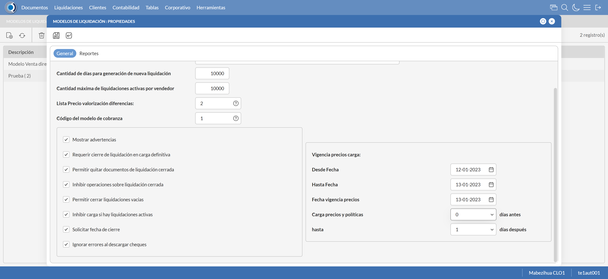 | ||||
test_027: Repetir Registro Modelos de Liquidacion |
pt1_29: 2023-01-12 12:49:04,251 - root - INFO - Se presiona el boton 'Refrescar', para crear un nuevo registro igual al anterior.
2023-01-12 12:49:04,474 - root - INFO - Se presiona el boton 'Nuevo', para crear un nuevo registro igual al anterior.
2023-01-12 12:49:05,049 - root - INFO - Se abrio la pantalla para el ingreso de un registro nuevo.
2023-01-12 12:49:05,083 - root - INFO - El campo 'Codigo' si se encuentra visible.
2023-01-12 12:49:05,119 - root - INFO - El campo 'Descrición' si se encuentra visible.
2023-01-12 12:49:05,152 - root - INFO - El campo 'Cantidad de días para generación de nueva liquidación' si se encuentra visible.
2023-01-12 12:49:05,187 - root - INFO - El campo 'Cantidad máxima de liquidaciones activas por vendedor' si se encuentra visible.
2023-01-12 12:49:05,221 - root - INFO - El campo 'Lista Precio valorización diferencias' por dif. tipo cambio' si se encuentra visible.
2023-01-12 12:49:05,254 - root - INFO - El campo 'Código del modelo de cobranza' si se encuentra visible.
2023-01-12 12:49:05,295 - root - INFO - El campo 'Mostrar advertencias' si se encuentra visible.
2023-01-12 12:49:05,336 - root - INFO - El campo 'Requerir cierre de liquidación en carga definitiva' si se encuentra visible.
2023-01-12 12:49:05,370 - root - INFO - El campo 'Permitir quitar documentos de liquidación cerrada' si se encuentra visible.
2023-01-12 12:49:05,405 - root - INFO - El campo 'Inhibir operaciones sobre liquidación cerrada' si se encuentra visible.
2023-01-12 12:49:05,440 - root - INFO - El campo 'Permitir cerrar liquidaciones vacias' si se encuentra visible.
2023-01-12 12:49:05,472 - root - INFO - El campo 'Inhibir carga si hay liquidaciones activas' si se encuentra visible.
2023-01-12 12:49:05,508 - root - INFO - El campo 'Solicitar fecha de cierre' si se encuentra visible.
2023-01-12 12:49:05,543 - root - INFO - El campo 'Ignorar errores al descargar cheques' si se encuentra visible.
2023-01-12 12:49:05,582 - root - INFO - El campo 'Desde Fecha' si se encuentra visible.
2023-01-12 12:49:05,644 - root - INFO - El campo 'Hasta Fecha' si se encuentra visible.
2023-01-12 12:49:05,693 - root - INFO - El campo 'Fecha vigencia precios' si se encuentra visible.
2023-01-12 12:49:05,727 - root - INFO - El campo 'Carga precios y políticas' si se encuentra visible.
2023-01-12 12:49:05,760 - root - INFO - El campo 'hasta' si se encuentra visible.
2023-01-12 12:49:05,818 - root - INFO - Ingresa el codigo del nuevo registro
2023-01-12 12:49:06,051 - root - INFO - Ingresa la descripción del nuevo registro
2023-01-12 12:49:06,151 - root - INFO - Ingresa la cantidad de días del nuevo registro
2023-01-12 12:49:06,246 - root - INFO - Ingresa la cantidad maxima del nuevo registro
2023-01-12 12:49:07,170 - root - INFO - Se dió doble click en el registro de Lista Precio.
2023-01-12 12:49:08,286 - root - INFO - Se dió doble click en el registro de Codigo Modelo.
2023-01-12 12:49:08,521 - root - INFO - Se movió la pagina hacía abajo.
2023-01-12 12:49:09,645 - root - INFO - Se dió click en el checkbox Mostrar Advertencias.
2023-01-12 12:49:09,719 - root - INFO - Se dió click en el checkbox Cierre Liquidacion Carga Definitiva.
2023-01-12 12:49:09,794 - root - INFO - Se dió click en el checkbox Quitar Documentos.
2023-01-12 12:49:09,870 - root - INFO - Se dió click en el checkbox Inhibir Operaciones.
2023-01-12 12:49:09,941 - root - INFO - Se dió click en el checkbox Cerrar Liquidaciones Vacias.
2023-01-12 12:49:10,014 - root - INFO - Se dió click en el checkbox Inhibir Carga.
2023-01-12 12:49:10,084 - root - INFO - Se dió click en el checkbox Solicitar Fecha Cierre.
2023-01-12 12:49:10,158 - root - INFO - Se dió click en el checkbox Ignorar Errores.
2023-01-12 12:49:10,574 - root - INFO - Se dió click en el botón Hoy para seleccionar la fecha Actual.
2023-01-12 12:49:11,007 - root - INFO - Se dió click en el botón Hoy para seleccionar la fecha Actual.
2023-01-12 12:49:13,416 - root - INFO - Se dió click en el botón Hoy para seleccionar la fecha Actual.
2023-01-12 12:49:13,804 - root - INFO - Se dió click en la opción de Carga Precios y Politicas.
2023-01-12 12:49:13,922 - root - INFO - Se da clic en el boton Guardar; No se debe crear un nuevo registro.
2023-01-12 12:49:14,924 - root - INFO - Captura: C:\xampp\htdocs\Versiones\automatizaciones\AutoPWST\ScriptAmarillo\report\img screen：20230112_12_49_14.png
2023-01-12 12:49:20,794 - root - INFO - Se presiona el boton 'Cerrar', para cerrar el mensaje de duplicidad de llave primaria
2023-01-12 12:49:21,796 - root - INFO - Captura: C:\xampp\htdocs\Versiones\automatizaciones\AutoPWST\ScriptAmarillo\report\img screen：20230112_12_49_21.png
2023-01-12 12:49:22,645 - root - INFO - Se presiona el boton 'Cerrar', para cerrar el mensaje de duplicidad de llave primaria
2023-01-12 12:49:22,816 - root - INFO - Se presiona el boton 'Cerrar', para cerrar la ventana
|
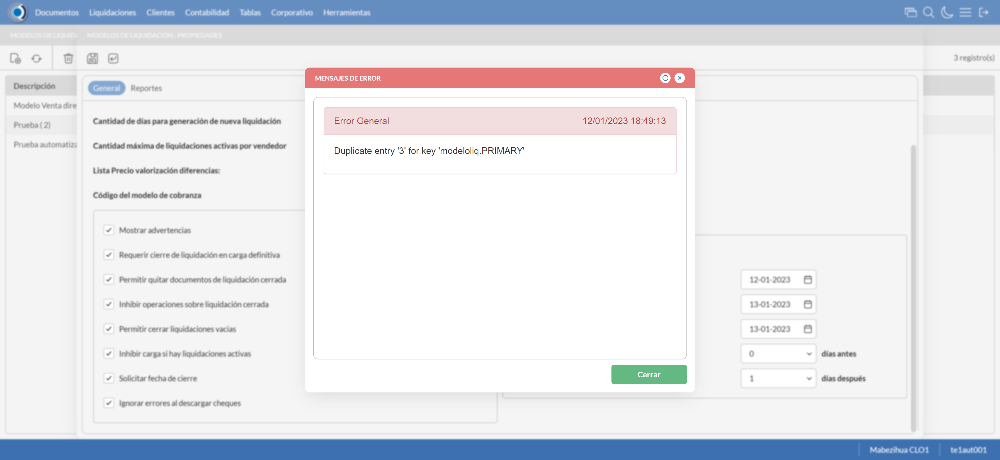 | ||||
test_028: Modifica Modelos de Liquidacion |
pt1_30: 2023-01-12 12:49:22,995 - root - INFO - Se presiona el boton 'Refrescar', para proceder a modificar el registro.
2023-01-12 12:49:24,608 - root - INFO - Se da clic en el registro creado, para proceder a modificarlo.
2023-01-12 12:49:25,424 - root - INFO - Se modifica el contenido del campo Descripción
2023-01-12 12:49:25,579 - root - INFO - Se modifica el contenido del campo Cantidad de Días
2023-01-12 12:49:25,724 - root - INFO - Se modifica el contenido del campo Cantidad Maxima
2023-01-12 12:49:26,934 - root - INFO - Se dió doble click en el registro de Lista Precio.
2023-01-12 12:49:28,068 - root - INFO - Se dió doble click en el registro de Codigo Modelo.
2023-01-12 12:49:28,277 - root - INFO - Se movió la pantalla hacia abajo.
2023-01-12 12:49:28,343 - root - INFO - Se dió click en el checkbox Mostrar Advertencias.
2023-01-12 12:49:28,431 - root - INFO - Se dió click en el checkbox Cierre Liquidacion Carga Definitiva.
2023-01-12 12:49:28,510 - root - INFO - Se dió click en el checkbox Quitar Documentos.
2023-01-12 12:49:28,582 - root - INFO - Se dió click en el checkbox Inhibir Operaciones.
2023-01-12 12:49:28,661 - root - INFO - Se dió click en el checkbox Cerrar Liquidaciones Vacias.
2023-01-12 12:49:28,745 - root - INFO - Se dió click en el checkbox Inhibir Carga.
2023-01-12 12:49:28,821 - root - INFO - Se dió click en el checkbox Ignorar Errores.
2023-01-12 12:49:30,710 - root - INFO - Se dió click en el botón Hoy para seleccionar la fecha Actual.
2023-01-12 12:49:32,979 - root - INFO - Se dió click en el botón Hoy para seleccionar la fecha Actual.
2023-01-12 12:49:33,434 - root - INFO - Se dió click en el botón Hoy para seleccionar la fecha Actual.
2023-01-12 12:49:33,859 - root - INFO - Se dió click en la opción de Carga precios y politcas.
2023-01-12 12:49:34,571 - root - INFO - Se dió click en la opción de Hasta.
2023-01-12 12:49:34,572 - root - INFO - Captura: C:\xampp\htdocs\Versiones\automatizaciones\AutoPWST\ScriptAmarillo\report\img screen：20230112_12_49_34.png
2023-01-12 12:49:35,552 - root - INFO - Se da clic en el boton Guardar; se debe modificar la informacion del registro.
|
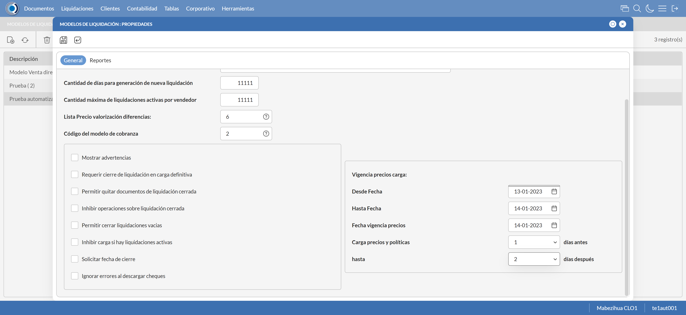 | ||||
test_029: Elimina Modelos de Liquidacion |
pt1_31: 2023-01-12 12:49:35,833 - root - INFO - Se presiona el boton 'Refrescar', para proceder a eliminar el registro.
2023-01-12 12:49:37,453 - root - INFO - Se da clic en el registro creado, para proceder a eliminarlo.
2023-01-12 12:49:37,551 - root - INFO - Se presiona el boton 'Eliminar', para eliminar el registro.
2023-01-12 12:49:39,553 - root - INFO - Captura: C:\xampp\htdocs\Versiones\automatizaciones\AutoPWST\ScriptAmarillo\report\img screen：20230112_12_49_39.png
2023-01-12 12:49:40,400 - root - INFO - Se confirma el eliminado del registro
2023-01-12 12:49:40,625 - root - INFO - Se presiona el boton 'Refrescar', para verificar si el registro ha sido eliminado.
2023-01-12 12:49:40,823 - root - INFO - Se presiona el boton 'Cerrar', para cerrar la pantalla de Modelos Liquidación.
|
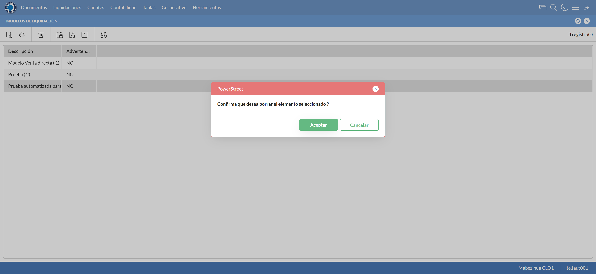 | ||||
test_030: Ingresa a pantalla Politicas AdHoc |
pt1_32: 2023-01-12 12:49:41,093 - root - INFO - El nombre de la pantalla para la automatización
2023-01-12 12:49:42,503 - root - INFO - La pantalla ejecutada es GRUPO DE POLÍTICAS AD HOC.
2023-01-12 12:49:42,503 - root - INFO - Captura: C:\xampp\htdocs\Versiones\automatizaciones\AutoPWST\ScriptAmarillo\report\img screen：20230112_12_49_42.png
2023-01-12 12:49:43,363 - root - INFO - Se presiona el boton 'Nuevo', para crear un nuevo registro.
|
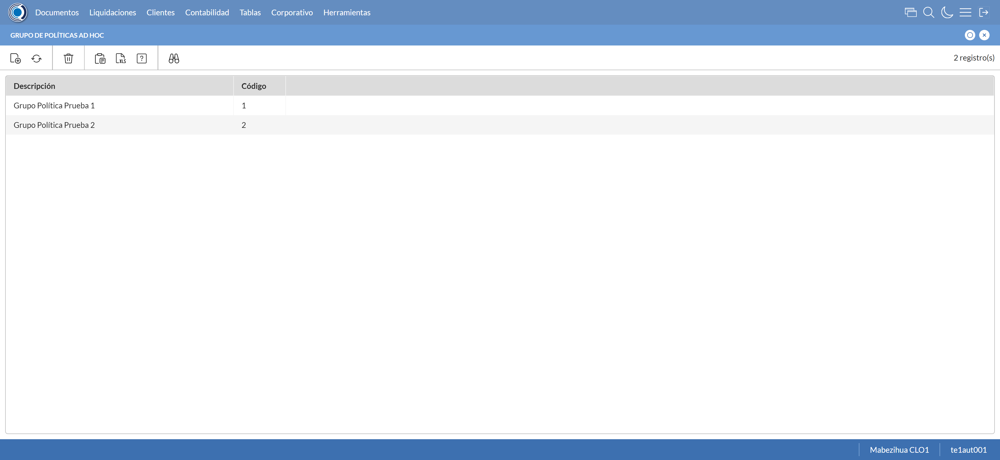 | ||||
test_031: Agregar Perfiles Politicas AdHoc |
pt1_33: 2023-01-12 12:49:43,936 - root - INFO - Se abrio la pantalla para el ingreso de un registro nuevo.
2023-01-12 12:49:43,988 - root - INFO - El campo 'Codigo' si se encuentra visible.
2023-01-12 12:49:44,039 - root - INFO - El campo 'Código Alternativo' si se encuentra visible.
2023-01-12 12:49:44,095 - root - INFO - El campo 'Descrición' si se encuentra visible.
2023-01-12 12:49:44,173 - root - INFO - Ingresa el codigo del nuevo registro
2023-01-12 12:49:44,295 - root - INFO - Ingresa el codigo alternativo del nuevo registro
2023-01-12 12:49:44,433 - root - INFO - Ingresa la descripción del nuevo registro
2023-01-12 12:49:46,434 - root - INFO - Captura: C:\xampp\htdocs\Versiones\automatizaciones\AutoPWST\ScriptAmarillo\report\img screen：20230112_12_49_46.png
2023-01-12 12:49:47,299 - root - INFO - Se da clic en el boton Guardar; se debe crear un nuevo registro.
|
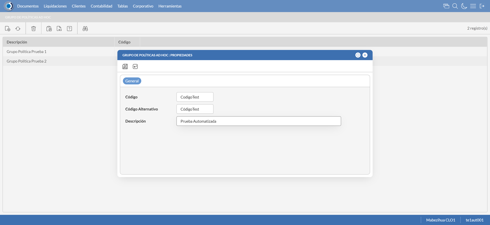 | ||||
test_032: Repetir Registro Politicas AdHoc |
pt1_34: 2023-01-12 12:49:47,552 - root - INFO - Se presiona el boton 'Refrescar', para crear un nuevo registro igual al anterior.
2023-01-12 12:49:47,720 - root - INFO - Se presiona el boton 'Nuevo', para crear un nuevo registro igual al anterior.
2023-01-12 12:49:48,283 - root - INFO - Se abrio la pantalla para el ingreso de un registro nuevo.
2023-01-12 12:49:48,327 - root - INFO - El campo 'Codigo' si se encuentra visible.
2023-01-12 12:49:48,372 - root - INFO - El campo 'Código Alternativo' si se encuentra visible.
2023-01-12 12:49:48,422 - root - INFO - El campo 'Descrición' si se encuentra visible.
2023-01-12 12:49:48,494 - root - INFO - Ingresa el codigo del nuevo registro
2023-01-12 12:49:48,611 - root - INFO - Ingresa el codigo alternativo del nuevo registro
2023-01-12 12:49:48,781 - root - INFO - Ingresa la descripción del nuevo registro
2023-01-12 12:49:48,872 - root - INFO - Se da clic en el boton Guardar; se debe crear un nuevo registro.
2023-01-12 12:49:49,873 - root - INFO - Captura: C:\xampp\htdocs\Versiones\automatizaciones\AutoPWST\ScriptAmarillo\report\img screen：20230112_12_49_49.png
2023-01-12 12:49:56,029 - root - INFO - Se presiona el boton 'Cerrar', para cerrar el mensaje de duplicidad de llave primaria
2023-01-12 12:49:57,030 - root - INFO - Captura: C:\xampp\htdocs\Versiones\automatizaciones\AutoPWST\ScriptAmarillo\report\img screen：20230112_12_49_57.png
2023-01-12 12:49:57,802 - root - INFO - Se presiona el boton 'Cerrar', para cerrar el mensaje de duplicidad de llave primaria
2023-01-12 12:49:57,930 - root - INFO - Se presiona el boton 'Cerrar', para cerrar la ventana
|

|
||||
test_033: Modifica Politicas AdHoc |
pt1_35: 2023-01-12 12:49:58,060 - root - INFO - Se presiona el boton 'Refrescar', para crear un nuevo registro igual al anterior.
2023-01-12 12:49:59,673 - root - INFO - Se da clic en el registro creado, para proceder a modificarlo.
2023-01-12 12:50:00,323 - root - INFO - Ingresa el codigo alternativo del nuevo registro
2023-01-12 12:50:00,502 - root - INFO - Se modifica el contenido del campo Descripcion
2023-01-12 12:50:02,503 - root - INFO - Captura: C:\xampp\htdocs\Versiones\automatizaciones\AutoPWST\ScriptAmarillo\report\img screen：20230112_12_50_02.png
2023-01-12 12:50:03,097 - root - INFO - Se da clic en el boton Guardar; se debe modificar la informacion del registro.
|
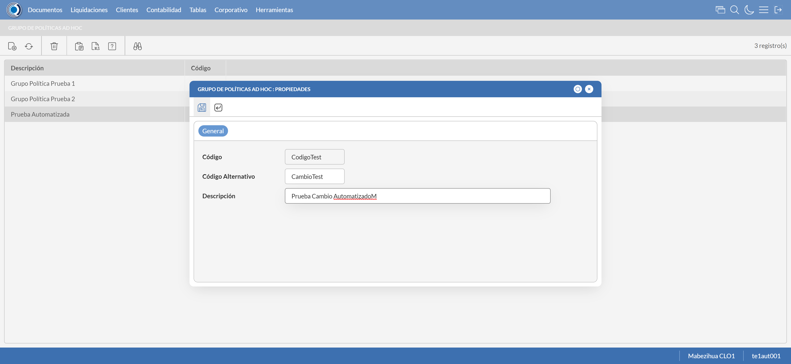 | ||||
test_034: Elimina Politicas AdHoc |
pt1_36: 2023-01-12 12:50:03,352 - root - INFO - Se presiona el boton 'Refrescar', para proceder a eliminar el registro.
2023-01-12 12:50:04,921 - root - INFO - Se da clic en el registro creado, para proceder a eliminarlo.
2023-01-12 12:50:05,035 - root - INFO - Se presiona el boton 'Eliminar', para eliminar el registro.
2023-01-12 12:50:07,037 - root - INFO - Captura: C:\xampp\htdocs\Versiones\automatizaciones\AutoPWST\ScriptAmarillo\report\img screen：20230112_12_50_07.png
2023-01-12 12:50:07,584 - root - INFO - Se confirma el eliminado del registro
2023-01-12 12:50:07,727 - root - INFO - Se presiona el boton 'Refrescar', para crear un nuevo registro igual al anterior.
2023-01-12 12:50:07,906 - root - INFO - Se presiona el boton 'Cerrar', para cerrar la pantalla de Categorias Fiscales.
|

|
||||
test_035: Ingresa a pantalla Programacion de Politicas |
pt1_37: 2023-01-12 12:50:22,878 - root - INFO - Abre la pantalla de Programación de Politicas de Venta
2023-01-12 12:50:23,486 - root - INFO - La pantalla ejecutada es Programación de Politicas de Venta.
2023-01-12 12:50:23,487 - root - INFO - Captura: C:\xampp\htdocs\Versiones\automatizaciones\AutoPWST\ScriptAmarillo\report\img screen：20230112_12_50_23.png
2023-01-12 12:50:34,083 - root - INFO - Se presiona el boton 'Nuevo', para crear un nuevo registro.
|
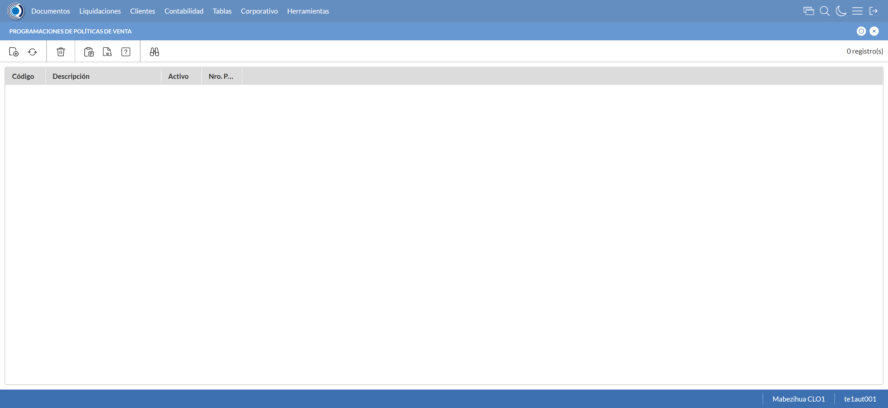 | ||||
test_036: Agregar Perfiles Programacion de Politicas |
pt1_38: 2023-01-12 12:50:34,661 - root - INFO - Se abrio la pantalla para el ingreso de un registro nuevo.
2023-01-12 12:50:34,696 - root - INFO - El campo 'Codigo' si se encuentra visible.
2023-01-12 12:50:34,731 - root - INFO - El campo 'Descrición' si se encuentra visible.
2023-01-12 12:50:34,768 - root - INFO - El campo 'Ejecutar Cuando' si se encuentra visible.
2023-01-12 12:50:34,804 - root - INFO - El campo 'Asignar a' si se encuentra visible.
2023-01-12 12:50:34,881 - root - INFO - El campo 'Aplicar filtros por' si se encuentra visible.
2023-01-12 12:50:34,917 - root - INFO - El campo 'Política de venta' si se encuentra visible.
2023-01-12 12:50:34,953 - root - INFO - El campo 'Observaciones' si se encuentra visible.
2023-01-12 12:50:34,988 - root - INFO - El campo 'Ejecutar generar' si se encuentra visible.
2023-01-12 12:50:35,024 - root - INFO - El campo 'Ejecutar eliminar' si se encuentra visible.
2023-01-12 12:50:35,059 - root - INFO - El campo 'Activa' si se encuentra visible.
2023-01-12 12:50:35,129 - root - INFO - Ingresa el codigo del nuevo registro
2023-01-12 12:50:35,250 - root - INFO - Ingresa la descripción del nuevo registro
2023-01-12 12:50:37,692 - root - INFO - Ingresa la observacion del nuevo registro
2023-01-12 12:50:37,832 - root - INFO - Hizo click en el checkbox
2023-01-12 12:50:37,898 - root - INFO - Hizo click en el checkbox
2023-01-12 12:50:37,968 - root - INFO - Hizo click en el checkbox
2023-01-12 12:50:38,970 - root - INFO - Captura: C:\xampp\htdocs\Versiones\automatizaciones\AutoPWST\ScriptAmarillo\report\img screen：20230112_12_50_38.png
2023-01-12 12:50:39,535 - root - INFO - Se da clic en el boton Guardar; se debe crear un nuevo registro.
|
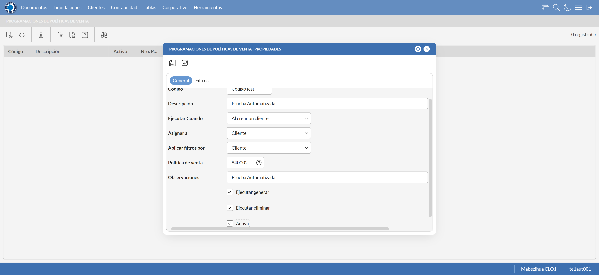 | ||||
test_037: Repetir Registro Programacion de Politicas |
pt1_39: 2023-01-12 12:50:39,818 - root - INFO - Se presiona el boton 'Refrescar', para crear un nuevo registro igual al anterior.
2023-01-12 12:50:39,972 - root - INFO - Se presiona el boton 'Nuevo', para crear un nuevo registro igual al anterior.
2023-01-12 12:50:40,555 - root - INFO - Se abrio la pantalla para el ingreso de un registro nuevo.
2023-01-12 12:50:40,596 - root - INFO - El campo 'Codigo' si se encuentra visible.
2023-01-12 12:50:40,630 - root - INFO - El campo 'Descrición' si se encuentra visible.
2023-01-12 12:50:40,663 - root - INFO - El campo 'Ejecutar Cuando' si se encuentra visible.
2023-01-12 12:50:40,697 - root - INFO - El campo 'Asignar a' si se encuentra visible.
2023-01-12 12:50:40,740 - root - INFO - El campo 'Aplicar filtros por' si se encuentra visible.
2023-01-12 12:50:40,773 - root - INFO - El campo 'Política de venta' si se encuentra visible.
2023-01-12 12:50:40,807 - root - INFO - El campo 'Observaciones' si se encuentra visible.
2023-01-12 12:50:40,841 - root - INFO - El campo 'Ejecutar generar' si se encuentra visible.
2023-01-12 12:50:40,876 - root - INFO - El campo 'Ejecutar eliminar' si se encuentra visible.
2023-01-12 12:50:40,908 - root - INFO - El campo 'Activa' si se encuentra visible.
2023-01-12 12:50:40,970 - root - INFO - Ingresa el codigo del nuevo registro
2023-01-12 12:50:41,086 - root - INFO - Ingresa la descripción del nuevo registro
2023-01-12 12:50:44,080 - root - INFO - Ingresa la observacion del nuevo registro
2023-01-12 12:50:44,204 - root - INFO - Hizo click en el checkbox
2023-01-12 12:50:44,271 - root - INFO - Hizo click en el checkbox
2023-01-12 12:50:44,339 - root - INFO - Hizo click en el checkbox
2023-01-12 12:50:45,342 - root - INFO - Captura: C:\xampp\htdocs\Versiones\automatizaciones\AutoPWST\ScriptAmarillo\report\img screen：20230112_12_50_45.png
2023-01-12 12:50:45,894 - root - INFO - Se da clic en el boton Guardar; NO se debe crear un nuevo registro.
2023-01-12 12:50:46,895 - root - INFO - Captura: C:\xampp\htdocs\Versiones\automatizaciones\AutoPWST\ScriptAmarillo\report\img screen：20230112_12_50_46.png
2023-01-12 12:50:52,766 - root - INFO - Se presiona el boton 'Cerrar', para cerrar el mensaje de duplicidad de llave primaria
2023-01-12 12:50:53,767 - root - INFO - Captura: C:\xampp\htdocs\Versiones\automatizaciones\AutoPWST\ScriptAmarillo\report\img screen：20230112_12_50_53.png
2023-01-12 12:50:54,434 - root - INFO - Se presiona el boton 'Cerrar', para cerrar el mensaje de duplicidad de llave primaria
2023-01-12 12:50:54,550 - root - INFO - Se presiona el boton 'Cerrar', para cerrar la ventana
|
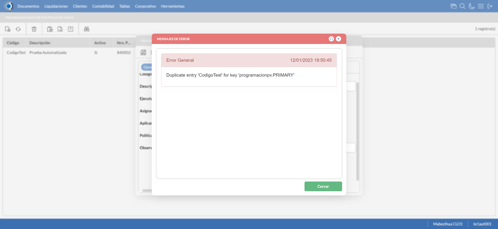 | ||||
test_038: Modifica Programacion de Politicas |
pt1_40: 2023-01-12 12:50:54,696 - root - INFO - Se presiona el boton 'Refrescar', para crear un nuevo registro igual al anterior.
2023-01-12 12:50:56,397 - root - INFO - Se da clic en el registro creado, para proceder a modificarlo.
2023-01-12 12:50:57,096 - root - INFO - Se modifica el contenido del campo Descripcion
2023-01-12 12:51:00,002 - root - INFO - Ingresa la observacion del nuevo registro
2023-01-12 12:51:00,140 - root - INFO - Hizo click en el checkbox
2023-01-12 12:51:00,205 - root - INFO - Hizo click en el checkbox
2023-01-12 12:51:00,298 - root - INFO - Hizo click en el checkbox
2023-01-12 12:51:01,299 - root - INFO - Captura: C:\xampp\htdocs\Versiones\automatizaciones\AutoPWST\ScriptAmarillo\report\img screen：20230112_12_51_01.png
2023-01-12 12:51:01,829 - root - INFO - Se da clic en el boton Guardar; se debe modificar la informacion del registro.
|
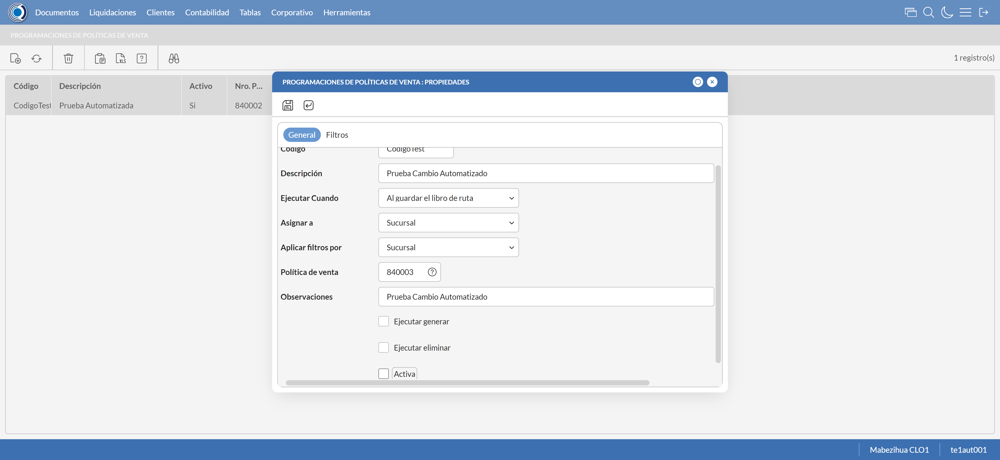 | ||||
test_039: Elimina Programacion de Politicas |
pt1_41: 2023-01-12 12:51:02,165 - root - INFO - Se presiona el boton 'Refrescar', para proceder a eliminar el registro.
2023-01-12 12:51:03,843 - root - INFO - Se da clic en el registro creado, para proceder a modificarlo.
2023-01-12 12:51:04,959 - root - INFO - Se presiona el boton 'Eliminar', para eliminar el registro.
2023-01-12 12:51:04,963 - root - INFO - Captura: C:\xampp\htdocs\Versiones\automatizaciones\AutoPWST\ScriptAmarillo\report\img screen：20230112_12_51_04.png
2023-01-12 12:51:05,508 - root - INFO - Se confirma el eliminado del registro
2023-01-12 12:51:05,714 - root - INFO - Se presiona el boton 'Refrescar', para crear un nuevo registro igual al anterior.
2023-01-12 12:51:05,885 - root - INFO - Se presiona el boton 'Cerrar', para cerrar la pantalla de Categorias Fiscales.
|
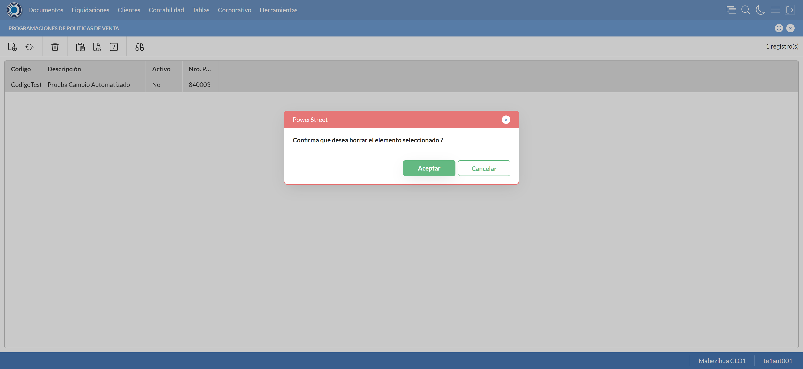 | ||||
test_040: Ingresa a pantalla Instancias Encuestas |
pt1_42: 2023-01-12 12:51:06,870 - root - INFO - Abre la pantalla de Instancias Encuestas
2023-01-12 12:51:07,528 - root - INFO - La pantalla ejecutada es Instancias Encuestas.
2023-01-12 12:51:07,529 - root - INFO - Captura: C:\xampp\htdocs\Versiones\automatizaciones\AutoPWST\ScriptAmarillo\report\img screen：20230112_12_51_07.png
2023-01-12 12:51:08,034 - root - INFO - Se presiona el boton 'Refrescar', para crear un nuevo registro igual al anterior.
|
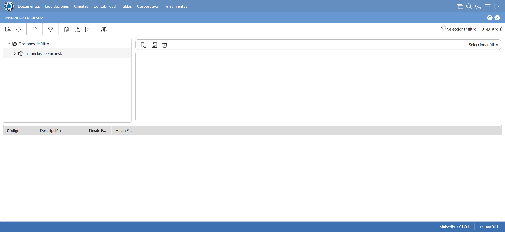 | ||||
test_041: Agregar Perfiles Instancias Encuestas |
pt1_43: 2023-01-12 12:51:20,756 - root - INFO - Se presiona el boton 'Nuevo', para crear un nuevo registro.
2023-01-12 12:51:21,361 - root - INFO - Se abrio la pantalla para el ingreso de un registro nuevo.
2023-01-12 12:51:21,397 - root - INFO - El campo 'Codigo' si se encuentra visible.
2023-01-12 12:51:21,435 - root - INFO - El campo 'Descrición' si se encuentra visible.
2023-01-12 12:51:21,471 - root - INFO - El campo 'Desde Fecha' si se encuentra visible.
2023-01-12 12:51:21,509 - root - INFO - El campo 'Hasta Fecha' si se encuentra visible.
2023-01-12 12:51:21,547 - root - INFO - El campo 'Fecha tope modificación' si se encuentra visible.
2023-01-12 12:51:21,584 - root - INFO - El campo 'Grupo artículos' si se encuentra visible.
2023-01-12 12:51:21,621 - root - INFO - El campo 'Frecuencia' si se encuentra visible.
2023-01-12 12:51:21,678 - root - INFO - El campo 'Grupo entidades multipropósito' si se encuentra visible.
2023-01-12 12:51:21,722 - root - INFO - El campo 'Obligatoria' si se encuentra visible.
2023-01-12 12:51:21,760 - root - INFO - El campo 'Solicitar motivo de no encuesta' si se encuentra visible.
2023-01-12 12:51:21,797 - root - INFO - El campo 'Agrupar tipos de encuesta por modo de respuestas' si se encuentra visible.
2023-01-12 12:51:21,879 - root - INFO - Ingresa el codigo del nuevo registro
2023-01-12 12:51:22,031 - root - INFO - Ingresa la descripción del nuevo registro
2023-01-12 12:51:27,079 - root - INFO - Captura: C:\xampp\htdocs\Versiones\automatizaciones\AutoPWST\ScriptAmarillo\report\img screen：20230112_12_51_27.png
2023-01-12 12:51:27,663 - root - INFO - Se hace el cambio de pestaña para continuar con el registro nuevo
2023-01-12 12:51:28,289 - root - INFO - Se presiona el boton 'Nuevo', para crear un nuevo registro.
2023-01-12 12:51:28,845 - root - INFO - El campo 'Tipo Encuesta' si se encuentra visible.
2023-01-12 12:51:28,884 - root - INFO - El campo 'Orden' si se encuentra visible.
2023-01-12 12:51:30,147 - root - INFO - Ingresa la Orden del nuevo registro
2023-01-12 12:51:31,313 - root - INFO - Se da clic en el boton Guardar; se debe crear un nuevo registro.
2023-01-12 12:51:31,648 - root - INFO - Se da clic en el boton Guardar; se debe crear un nuevo registro.
|
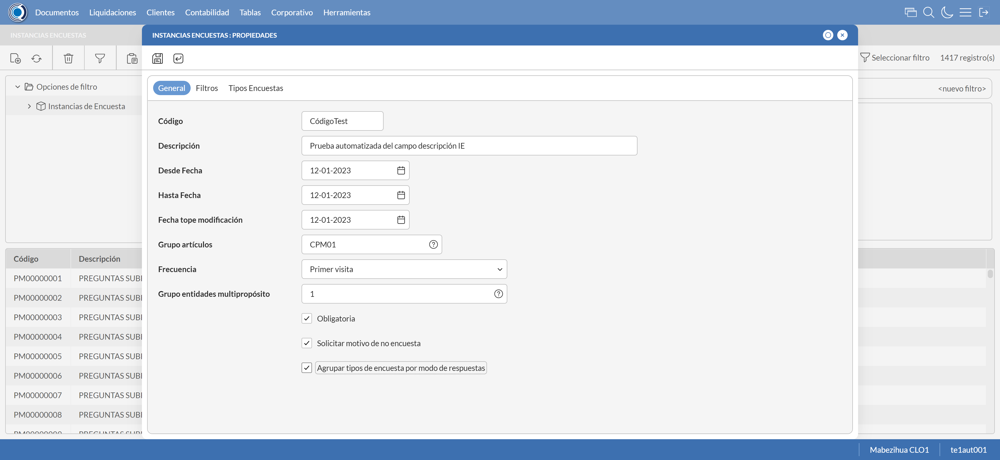 | ||||
test_042: Repetir Registro Instancias Encuestas |
pt1_44: 2023-01-12 12:51:32,016 - root - INFO - Se presiona el boton 'Refrescar', para crear un nuevo registro igual al anterior.
2023-01-12 12:51:35,184 - root - INFO - Se presiona el boton 'Nuevo', para crear un nuevo registro igual al anterior.
2023-01-12 12:51:35,737 - root - INFO - Se abrio la pantalla para el ingreso de un registro nuevo.
2023-01-12 12:51:35,771 - root - INFO - El campo 'Codigo' si se encuentra visible.
2023-01-12 12:51:35,805 - root - INFO - El campo 'Descrición' si se encuentra visible.
2023-01-12 12:51:35,837 - root - INFO - El campo 'Desde Fecha' si se encuentra visible.
2023-01-12 12:51:35,871 - root - INFO - El campo 'Hasta Fecha' si se encuentra visible.
2023-01-12 12:51:35,904 - root - INFO - El campo 'Fecha tope modificación' si se encuentra visible.
2023-01-12 12:51:35,943 - root - INFO - El campo 'Grupo artículos' si se encuentra visible.
2023-01-12 12:51:35,978 - root - INFO - El campo 'Frecuencia' si se encuentra visible.
2023-01-12 12:51:36,011 - root - INFO - El campo 'Grupo entidades multipropósito' si se encuentra visible.
2023-01-12 12:51:36,045 - root - INFO - El campo 'Obligatoria' si se encuentra visible.
2023-01-12 12:51:36,078 - root - INFO - El campo 'Solicitar motivo de no encuesta' si se encuentra visible.
2023-01-12 12:51:36,116 - root - INFO - El campo 'Agrupar tipos de encuesta por modo de respuestas' si se encuentra visible.
2023-01-12 12:51:36,183 - root - INFO - Ingresa el codigo del nuevo registro
2023-01-12 12:51:36,335 - root - INFO - Ingresa la descripción del nuevo registro
2023-01-12 12:51:39,444 - root - INFO - Se da clic en el boton Guardar; se debe crear un nuevo registro.
2023-01-12 12:51:40,445 - root - INFO - Captura: C:\xampp\htdocs\Versiones\automatizaciones\AutoPWST\ScriptAmarillo\report\img screen：20230112_12_51_40.png
2023-01-12 12:51:46,363 - root - INFO - Se presiona el boton 'Cerrar', para cerrar el mensaje de duplicidad de llave primaria
2023-01-12 12:51:47,366 - root - INFO - Captura: C:\xampp\htdocs\Versiones\automatizaciones\AutoPWST\ScriptAmarillo\report\img screen：20230112_12_51_47.png
2023-01-12 12:51:48,114 - root - INFO - Se presiona el boton 'Cerrar', para cerrar el mensaje de duplicidad de llave primaria
2023-01-12 12:51:48,233 - root - INFO - Se presiona el boton 'Cerrar', para cerrar la ventana
|
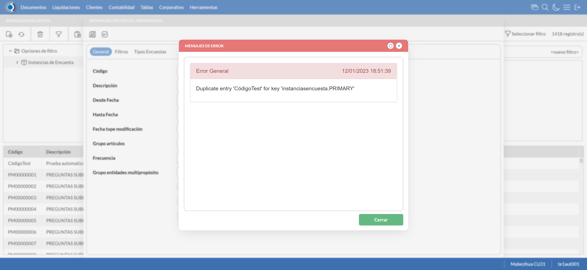 | ||||
test_043: Modifica Instancias Encuestas |
pt1_45: 2023-01-12 12:51:48,395 - root - INFO - Se presiona el boton 'Refrescar', para crear un nuevo registro igual al anterior.
2023-01-12 12:51:50,056 - root - INFO - Se da clic en el registro creado, para proceder a modificarlo.
2023-01-12 12:51:50,841 - root - INFO - Se modifica el contenido del campo Descripcion
2023-01-12 12:51:51,843 - root - INFO - Captura: C:\xampp\htdocs\Versiones\automatizaciones\AutoPWST\ScriptAmarillo\report\img screen：20230112_12_51_51.png
2023-01-12 12:51:57,416 - root - INFO - Captura: C:\xampp\htdocs\Versiones\automatizaciones\AutoPWST\ScriptAmarillo\report\img screen：20230112_12_51_57.png
2023-01-12 12:51:58,061 - root - INFO - Se hace el cambio de pestaña para continuar con el registro nuevo
2023-01-12 12:51:59,223 - root - INFO - Se da clic en el registro creado, para proceder a modificarlo.
2023-01-12 12:51:59,348 - root - INFO - Se presiona el boton 'Eliminar', para eliminar el registro.
2023-01-12 12:51:59,460 - root - INFO - Se presiona el boton 'Nuevo', para crear un nuevo registro.
2023-01-12 12:52:01,257 - root - INFO - Ingresa la Orden del nuevo registro
2023-01-12 12:52:01,409 - root - INFO - Se da clic en el boton Guardar; se debe crear un nuevo registro.
2023-01-12 12:52:01,772 - root - INFO - Se da clic en el boton Guardar; se debe modificar la informacion del registro.
|
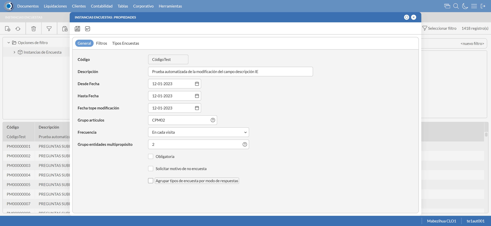 | ||||
test_044: Elimina Instancias Encuestas |
pt1_46: 2023-01-12 12:52:02,960 - root - INFO - Se presiona el boton 'Refrescar', para proceder a eliminar el registro.
2023-01-12 12:52:04,692 - root - INFO - Se da clic en el registro creado, para proceder a eliminarlo.
2023-01-12 12:52:05,337 - root - INFO - Se hace el cambio de pestaña para continuar con el registro nuevo
2023-01-12 12:52:11,234 - root - INFO - Se da clic en el registro creado, para proceder a modificarlo.
2023-01-12 12:52:11,366 - root - INFO - Se presiona el boton 'Eliminar', para eliminar el registro.
2023-01-12 12:52:11,537 - root - INFO - Se da clic en el boton Guardar; se debe modificar la informacion del registro.
2023-01-12 12:52:12,943 - root - INFO - Se da clic en el registro creado, para proceder a eliminarlo.
2023-01-12 12:52:13,056 - root - INFO - Se presiona el boton 'Eliminar', para eliminar el registro.
2023-01-12 12:52:15,057 - root - INFO - Captura: C:\xampp\htdocs\Versiones\automatizaciones\AutoPWST\ScriptAmarillo\report\img screen：20230112_12_52_15.png
2023-01-12 12:52:15,624 - root - INFO - Se confirma el eliminado del registro
2023-01-12 12:52:16,125 - root - INFO - Se presiona el boton 'Refrescar', para crear un nuevo registro igual al anterior.
2023-01-12 12:52:16,626 - root - INFO - Se presiona el boton 'Cerrar', para cerrar la pantalla de Categorias Fiscales.
|
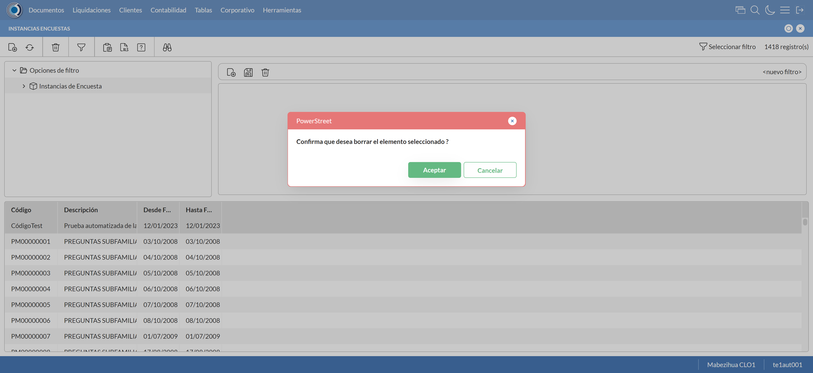 | ||||
test_045: Ingresa a pantalla Clasificacion Vendedor |
pt1_47: 2023-01-12 12:52:17,687 - root - INFO - Abre la pantalla de Clasificación Vendedor
2023-01-12 12:52:18,324 - root - INFO - La pantalla ejecutada es Clasificación Vendedor.
2023-01-12 12:52:18,325 - root - INFO - Captura: C:\xampp\htdocs\Versiones\automatizaciones\AutoPWST\ScriptAmarillo\report\img screen：20230112_12_52_18.png
2023-01-12 12:52:18,845 - root - INFO - Se presiona el boton 'Nuevo', para crear un nuevo registro.
|
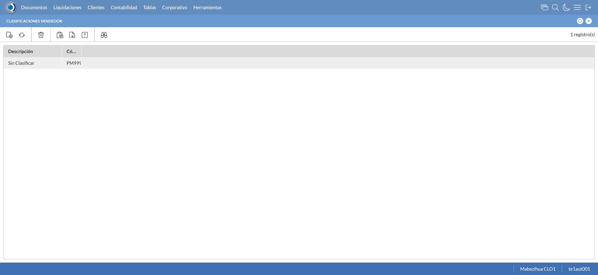 | ||||
test_046: Agregar Perfiles Clasificacion Vendedor |
pt1_48: 2023-01-12 12:52:19,454 - root - INFO - Se abrio la pantalla para el ingreso de un registro nuevo.
2023-01-12 12:52:19,536 - root - INFO - Ingresa el codigo del nuevo registro
2023-01-12 12:52:19,645 - root - INFO - Ingresa la descripción del nuevo registro
2023-01-12 12:52:19,646 - root - INFO - Captura: C:\xampp\htdocs\Versiones\automatizaciones\AutoPWST\ScriptAmarillo\report\img screen：20230112_12_52_19.png
2023-01-12 12:52:20,179 - root - INFO - Se da clic en el boton Guardar; se debe crear un nuevo registro.
|
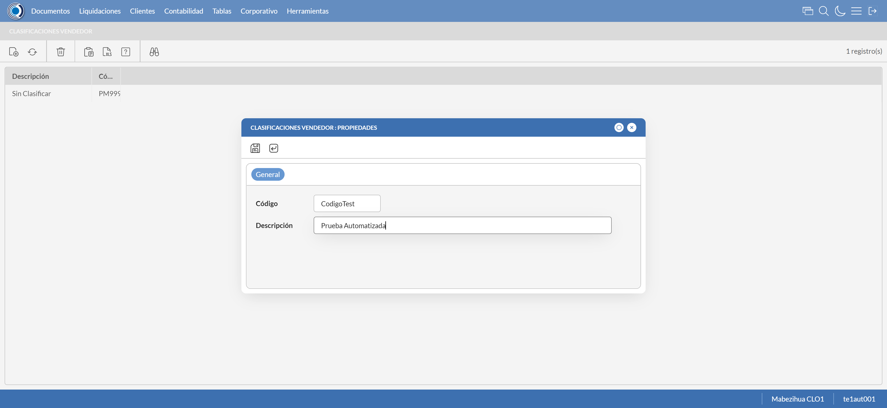 | ||||
test_047: Repetir Registro Clasificacion Vendedor |
pt1_49: 2023-01-12 12:52:20,443 - root - INFO - Se presiona el boton 'Refrescar', para crear un nuevo registro igual al anterior.
2023-01-12 12:52:22,551 - root - INFO - Se presiona el boton 'Nuevo', para crear un nuevo registro igual al anterior.
2023-01-12 12:52:23,121 - root - INFO - Se abrio la pantalla para el ingreso de un registro nuevo.
2023-01-12 12:52:23,187 - root - INFO - Ingresa el codigo del nuevo registro
2023-01-12 12:52:23,292 - root - INFO - Ingresa la descripción del nuevo registro
2023-01-12 12:52:23,358 - root - INFO - Se da clic en el boton Guardar; se debe crear un nuevo registro.
2023-01-12 12:52:23,973 - root - INFO - Se da clic en el boton del mensaje de registro duplicado
2023-01-12 12:52:25,975 - root - INFO - Captura: C:\xampp\htdocs\Versiones\automatizaciones\AutoPWST\ScriptAmarillo\report\img screen：20230112_12_52_25.png
2023-01-12 12:52:26,664 - root - INFO - Se presiona el boton 'Cerrar', para cerrar el mensaje de duplicidad de llave primaria
2023-01-12 12:52:26,819 - root - INFO - Se presiona el boton 'Cerrar', para cerrar la ventana
|
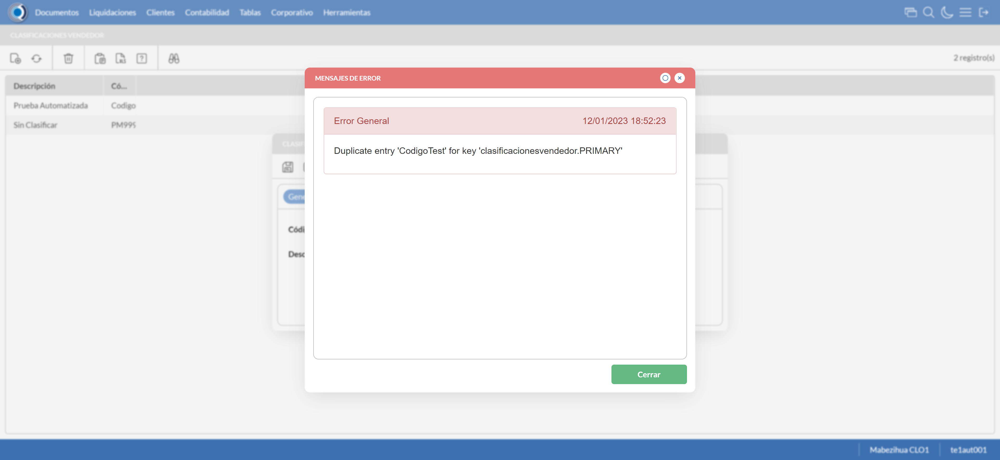 | ||||
test_048: Modifica Clasificacion Vendedor |
pt1_50: 2023-01-12 12:52:26,961 - root - INFO - Se presiona el boton 'Refrescar', para crear un nuevo registro igual al anterior.
2023-01-12 12:52:29,638 - root - INFO - Se da clic en el registro creado, para proceder a modificarlo.
2023-01-12 12:52:30,363 - root - INFO - Se modifica el contenido del campo Descripcion
2023-01-12 12:52:30,363 - root - INFO - Captura: C:\xampp\htdocs\Versiones\automatizaciones\AutoPWST\ScriptAmarillo\report\img screen：20230112_12_52_30.png
2023-01-12 12:52:30,907 - root - INFO - Se da clic en el boton Guardar; se debe modificar la informacion del registro.
|
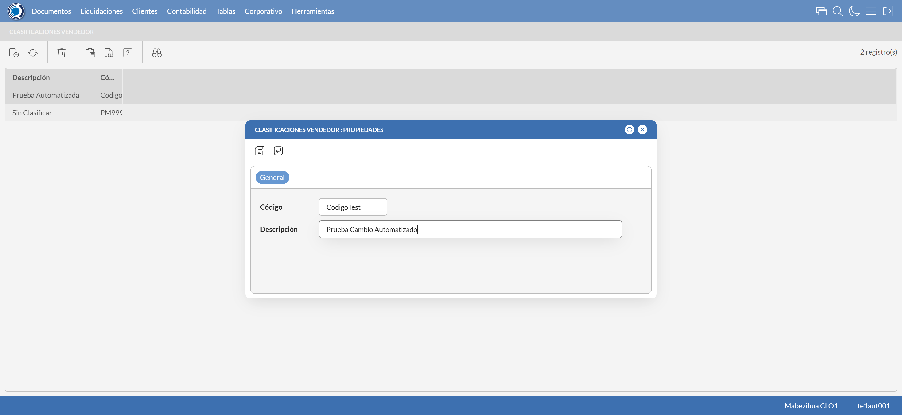 | ||||
test_049: Elimina Clasificacion Vendedor |
pt1_51: 2023-01-12 12:52:31,170 - root - INFO - Se presiona el boton 'Refrescar', para proceder a eliminar el registro.
2023-01-12 12:52:33,815 - root - INFO - Se da clic en el registro creado, para proceder a eliminarlo.
2023-01-12 12:52:33,921 - root - INFO - Se presiona el boton 'Eliminar', para eliminar el registro.
2023-01-12 12:52:35,923 - root - INFO - Captura: C:\xampp\htdocs\Versiones\automatizaciones\AutoPWST\ScriptAmarillo\report\img screen：20230112_12_52_35.png
2023-01-12 12:52:36,479 - root - INFO - Se confirma el eliminado del registro
2023-01-12 12:52:36,688 - root - INFO - Se presiona el boton 'Refrescar', para crear un nuevo registro igual al anterior.
2023-01-12 12:52:38,818 - root - INFO - Se presiona el boton 'Cerrar', para cerrar la pantalla de Categorias Fiscales.
|
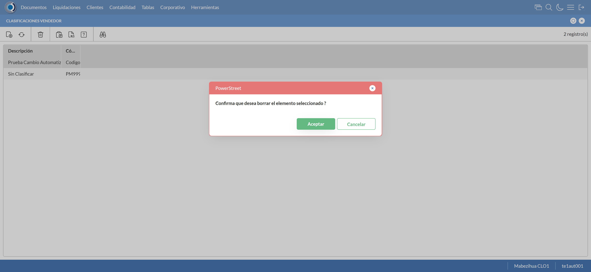 | ||||
test_050: Ingresa a pantalla Clasificacion Vendedor 2 |
pt1_52: 2023-01-12 12:52:39,833 - root - INFO - Abre la pantalla de Clasificaciones 2
2023-01-12 12:52:40,460 - root - INFO - La pantalla ejecutada es Clasifiaciones 2
2023-01-12 12:52:40,461 - root - INFO - Captura: C:\xampp\htdocs\Versiones\automatizaciones\AutoPWST\ScriptAmarillo\report\img screen：20230112_12_52_40.png
2023-01-12 12:52:40,977 - root - INFO - Se presiona el boton 'Nuevo', para crear un nuevo registro.
|
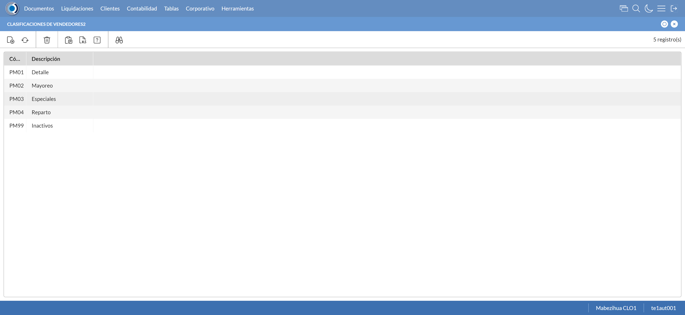 | ||||
test_051: Agregar Perfiles Clasificacion Vendedor 2 |
pt1_53: 2023-01-12 12:52:41,559 - root - INFO - Se abrio la pantalla para el ingreso de un registro nuevo.
2023-01-12 12:52:41,619 - root - INFO - Ingresa el codigo del nuevo registro
2023-01-12 12:52:41,763 - root - INFO - Ingresa el codigo usuario del nuevo registro
2023-01-12 12:52:41,863 - root - INFO - Ingresa el codigo alternativo del nuevo registro
2023-01-12 12:52:41,966 - root - INFO - Ingresa la descripción del nuevo registro
2023-01-12 12:52:41,966 - root - INFO - Captura: C:\xampp\htdocs\Versiones\automatizaciones\AutoPWST\ScriptAmarillo\report\img screen：20230112_12_52_41.png
2023-01-12 12:52:42,537 - root - INFO - Se da clic en el boton Guardar; se debe crear un nuevo registro.
|
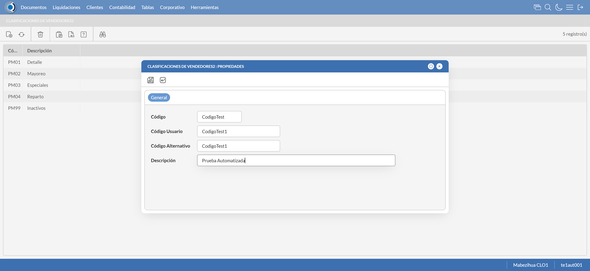 | ||||
test_052: Repetir Registro Clasificacion Vendedor 2 |
pt1_54: 2023-01-12 12:52:42,807 - root - INFO - Se presiona el boton 'Refrescar', para crear un nuevo registro igual al anterior.
2023-01-12 12:52:44,903 - root - INFO - Se presiona el boton 'Nuevo', para crear un nuevo registro igual al anterior.
2023-01-12 12:52:45,482 - root - INFO - Se abrio la pantalla para el ingreso de un registro nuevo.
2023-01-12 12:52:45,544 - root - INFO - Ingresa el codigo del nuevo registro
2023-01-12 12:52:45,634 - root - INFO - Ingresa el codigo usuario del nuevo registro
2023-01-12 12:52:45,733 - root - INFO - Ingresa el codigo alternativo del nuevo registro
2023-01-12 12:52:45,837 - root - INFO - Ingresa la descripción del nuevo registro
2023-01-12 12:52:45,900 - root - INFO - Se da clic en el boton Guardar; se debe crear un nuevo registro.
2023-01-12 12:52:46,492 - root - INFO - Se da clic en el boton del mensaje de registro duplicado
2023-01-12 12:52:48,494 - root - INFO - Captura: C:\xampp\htdocs\Versiones\automatizaciones\AutoPWST\ScriptAmarillo\report\img screen：20230112_12_52_48.png
2023-01-12 12:52:49,153 - root - INFO - Se presiona el boton 'Cerrar', para cerrar el mensaje de duplicidad de llave primaria
2023-01-12 12:52:49,316 - root - INFO - Se presiona el boton 'Cerrar', para cerrar la ventana
|
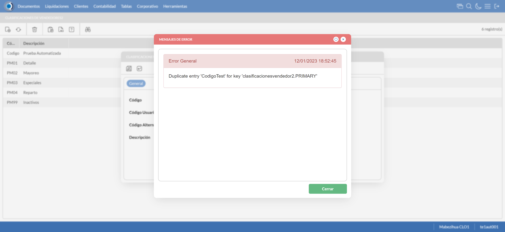 | ||||
test_053: Modifica Clasificacion Vendedor 2 |
pt1_55: 2023-01-12 12:52:49,467 - root - INFO - Se presiona el boton 'Refrescar', para crear un nuevo registro igual al anterior.
2023-01-12 12:52:52,154 - root - INFO - Se da clic en el registro creado, para proceder a modificarlo.
2023-01-12 12:52:52,855 - root - INFO - Ingresa el codigo usuario del nuevo registro
2023-01-12 12:52:52,974 - root - INFO - Se modifica el contenido del campo Codigo Alternativo
2023-01-12 12:52:53,110 - root - INFO - Se modifica el contenido del campo Descripcion
2023-01-12 12:52:53,110 - root - INFO - Captura: C:\xampp\htdocs\Versiones\automatizaciones\AutoPWST\ScriptAmarillo\report\img screen：20230112_12_52_53.png
2023-01-12 12:52:53,682 - root - INFO - Se da clic en el boton Guardar; se debe modificar la informacion del registro.
|
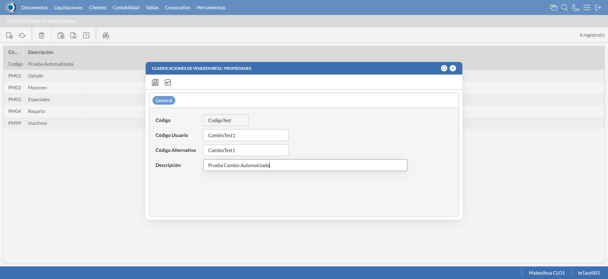 | ||||
test_054: Elimina Clasificacion Vendedor 2 |
pt1_56: 2023-01-12 12:52:53,955 - root - INFO - Se presiona el boton 'Refrescar', para proceder a eliminar el registro.
2023-01-12 12:52:56,532 - root - INFO - Se da clic en el registro creado, para proceder a eliminarlo.
2023-01-12 12:52:56,644 - root - INFO - Se presiona el boton 'Eliminar', para eliminar el registro.
2023-01-12 12:52:58,646 - root - INFO - Captura: C:\xampp\htdocs\Versiones\automatizaciones\AutoPWST\ScriptAmarillo\report\img screen：20230112_12_52_58.png
2023-01-12 12:52:59,185 - root - INFO - Se confirma el eliminado del registro
2023-01-12 12:52:59,393 - root - INFO - Se presiona el boton 'Refrescar', para crear un nuevo registro igual al anterior.
2023-01-12 12:53:01,510 - root - INFO - Se presiona el boton 'Cerrar', para cerrar la pantalla de Categorias Fiscales.
|
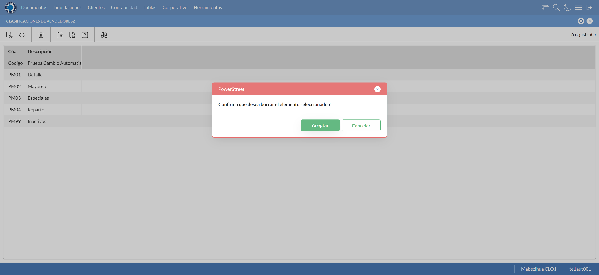 | ||||
test_055: Ingresa a pantalla Planometria |
pt1_57: 2023-01-12 12:53:02,520 - root - INFO - Abre la pantalla de Planometrias
2023-01-12 12:53:03,111 - root - INFO - La pantalla ejecutada es Planometrias.
2023-01-12 12:53:03,112 - root - INFO - Captura: C:\xampp\htdocs\Versiones\automatizaciones\AutoPWST\ScriptAmarillo\report\img screen：20230112_12_53_03.png
2023-01-12 12:53:13,787 - root - INFO - Se presiona el boton 'Nuevo', para crear un nuevo registro.
|
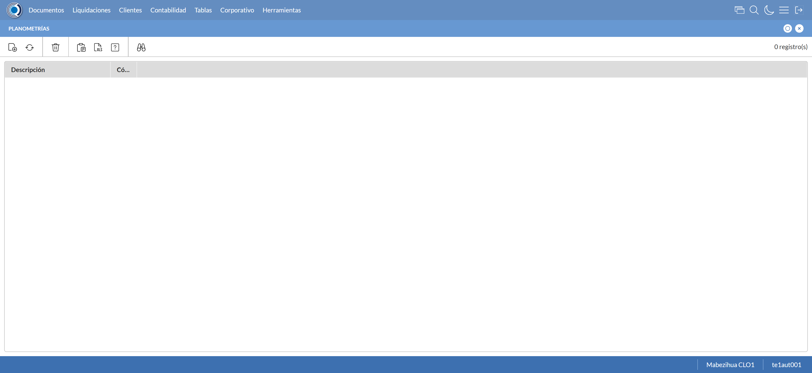 | ||||
test_056: Agregar Perfiles Planometria |
pt1_58: 2023-01-12 12:53:14,367 - root - INFO - Se abrio la pantalla para el ingreso de un registro nuevo.
2023-01-12 12:53:14,411 - root - INFO - El campo 'Código' si se encuentra visible.
2023-01-12 12:53:14,448 - root - INFO - El campo 'Codigo Alternativo' si se encuentra visible.
2023-01-12 12:53:14,485 - root - INFO - El campo 'Descripción' si se encuentra visible.
2023-01-12 12:53:14,529 - root - INFO - El campo 'Articulo' si se encuentra visible.
2023-01-12 12:53:14,566 - root - INFO - El campo 'Activa' si se encuentra visible.
2023-01-12 12:53:14,628 - root - INFO - Ingresa el Codigo del nuevo registro
2023-01-12 12:53:14,724 - root - INFO - Ingresa el Codigo Alternativo del nuevo registro
2023-01-12 12:53:14,844 - root - INFO - Ingresa la Descripción del nuevo registro
2023-01-12 12:53:17,375 - root - INFO - Captura: C:\xampp\htdocs\Versiones\automatizaciones\AutoPWST\ScriptAmarillo\report\img screen：20230112_12_53_17.png
2023-01-12 12:53:17,908 - root - INFO - Se da clic en el boton Guardar; se debe crear un nuevo registro.
|
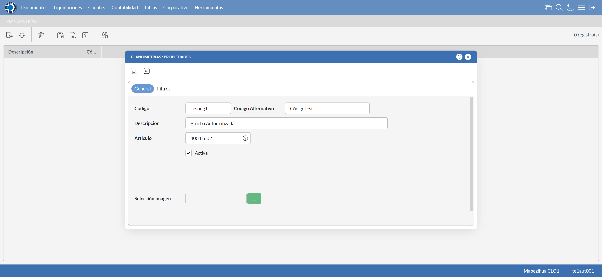 | ||||
test_057: Repetir Registro Planometria |
pt1_59: 2023-01-12 12:53:18,262 - root - INFO - Se presiona el boton 'Refrescar', para crear un nuevo registro igual al anterior.
2023-01-12 12:53:18,416 - root - INFO - Se presiona el boton 'Nuevo', para crear un nuevo registro igual al anterior.
2023-01-12 12:53:19,004 - root - INFO - Se abrio la pantalla para el ingreso de un registro nuevo.
2023-01-12 12:53:19,057 - root - INFO - El campo 'Código' si se encuentra visible.
2023-01-12 12:53:19,092 - root - INFO - El campo 'Codigo Alternativo' si se encuentra visible.
2023-01-12 12:53:19,126 - root - INFO - El campo 'Descripción' si se encuentra visible.
2023-01-12 12:53:19,164 - root - INFO - El campo 'Articulo' si se encuentra visible.
2023-01-12 12:53:19,197 - root - INFO - El campo 'Activa' si se encuentra visible.
2023-01-12 12:53:19,257 - root - INFO - Ingresa el Codigo del nuevo registro
2023-01-12 12:53:20,466 - root - INFO - Ingresa el Codigo Alternativo del nuevo registro
2023-01-12 12:53:21,614 - root - INFO - Ingresa la Descripción del nuevo registro
2023-01-12 12:53:24,110 - root - INFO - Captura: C:\xampp\htdocs\Versiones\automatizaciones\AutoPWST\ScriptAmarillo\report\img screen：20230112_12_53_24.png
2023-01-12 12:53:24,653 - root - INFO - Se da clic en el boton Guardar; NO se debe crear un nuevo registro.
2023-01-12 12:53:25,656 - root - INFO - Captura: C:\xampp\htdocs\Versiones\automatizaciones\AutoPWST\ScriptAmarillo\report\img screen：20230112_12_53_25.png
2023-01-12 12:53:31,603 - root - INFO - Se presiona el boton 'Cerrar', para cerrar el mensaje de duplicidad de llave primaria
2023-01-12 12:53:32,605 - root - INFO - Captura: C:\xampp\htdocs\Versiones\automatizaciones\AutoPWST\ScriptAmarillo\report\img screen：20230112_12_53_32.png
2023-01-12 12:53:33,302 - root - INFO - Se presiona el boton 'Cerrar', para cerrar el mensaje de duplicidad de llave primaria
2023-01-12 12:53:33,416 - root - INFO - Se presiona el boton 'Cerrar', para cerrar la ventana
|
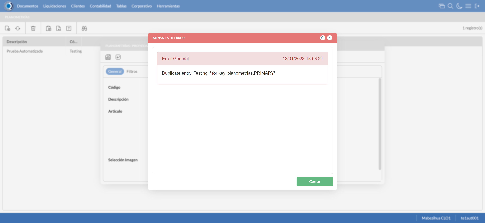 | ||||
test_058: Modifica Planometria |
pt1_60: 2023-01-12 12:53:33,573 - root - INFO - Se presiona el boton 'Refrescar', para crear un nuevo registro igual al anterior.
2023-01-12 12:53:35,232 - root - INFO - Se da clic en el registro creado, para proceder a modificarlo.
2023-01-12 12:53:35,917 - root - INFO - Ingresa el Codigo Alternativo del nuevo registro
2023-01-12 12:53:36,102 - root - INFO - Ingresa la Descripción del nuevo registro
2023-01-12 12:53:38,792 - root - INFO - Captura: C:\xampp\htdocs\Versiones\automatizaciones\AutoPWST\ScriptAmarillo\report\img screen：20230112_12_53_38.png
2023-01-12 12:53:39,337 - root - INFO - Se da clic en el boton Guardar; se debe modificar la informacion del registro.
|
|||||
test_059: Elimina Planometria |
pt1_61: 2023-01-12 12:53:39,660 - root - INFO - Se presiona el boton 'Refrescar', para proceder a eliminar el registro.
2023-01-12 12:53:41,306 - root - INFO - Se da clic en el registro creado, para proceder a modificarlo.
2023-01-12 12:53:42,406 - root - INFO - Se presiona el boton 'Eliminar', para eliminar el registro.
2023-01-12 12:53:42,408 - root - INFO - Captura: C:\xampp\htdocs\Versiones\automatizaciones\AutoPWST\ScriptAmarillo\report\img screen：20230112_12_53_42.png
2023-01-12 12:53:42,932 - root - INFO - Se confirma el eliminado del registro
2023-01-12 12:53:43,131 - root - INFO - Se presiona el boton 'Refrescar', para crear un nuevo registro igual al anterior.
2023-01-12 12:53:43,294 - root - INFO - Se presiona el boton 'Cerrar', para cerrar la pantalla de Categorias Fiscales.
|
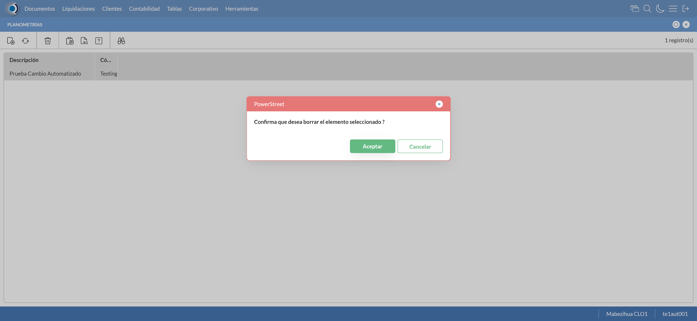 | ||||
test_060: Ingresa a pantalla Clasificacion Politicas |
pt1_62: 2023-01-12 12:53:44,371 - root - INFO - Abre la pantalla de Clasificaciones de Politicas de Venta
2023-01-12 12:53:44,973 - root - INFO - La pantalla ejecutada es Clasificaciones de Políticas de Venta.
2023-01-12 12:53:44,974 - root - INFO - Captura: C:\xampp\htdocs\Versiones\automatizaciones\AutoPWST\ScriptAmarillo\report\img screen：20230112_12_53_44.png
2023-01-12 12:53:45,492 - root - INFO - Se presiona el boton 'Nuevo', para crear un nuevo registro.
|
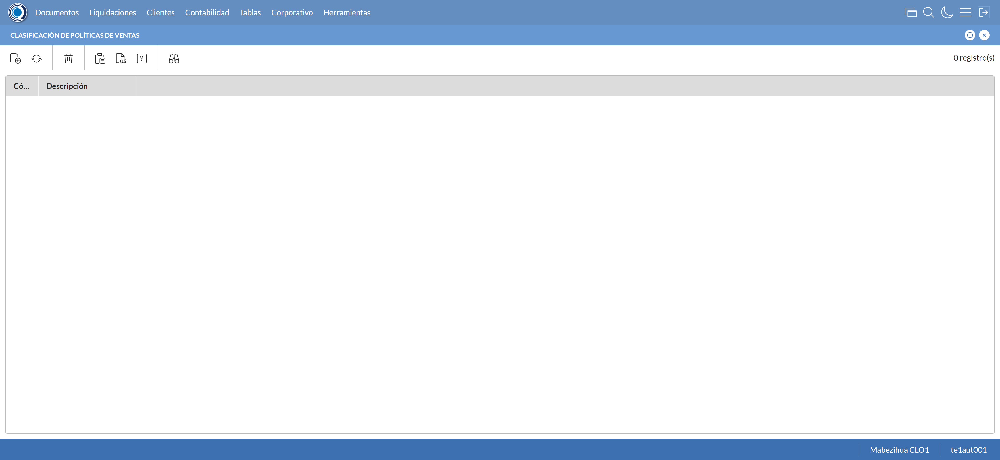 | ||||
test_061: Agregar Perfiles Clasificacion Politicas |
pt1_63: 2023-01-12 12:53:46,102 - root - INFO - Se abrio la pantalla para el ingreso de un registro nuevo.
2023-01-12 12:53:46,167 - root - INFO - Ingresa el codigo del nuevo registro
2023-01-12 12:53:46,327 - root - INFO - Ingresa la descripción del nuevo registro
2023-01-12 12:53:46,327 - root - INFO - Captura: C:\xampp\htdocs\Versiones\automatizaciones\AutoPWST\ScriptAmarillo\report\img screen：20230112_12_53_46.png
2023-01-12 12:53:46,858 - root - INFO - Se da clic en el boton Guardar; se debe crear un nuevo registro.
|
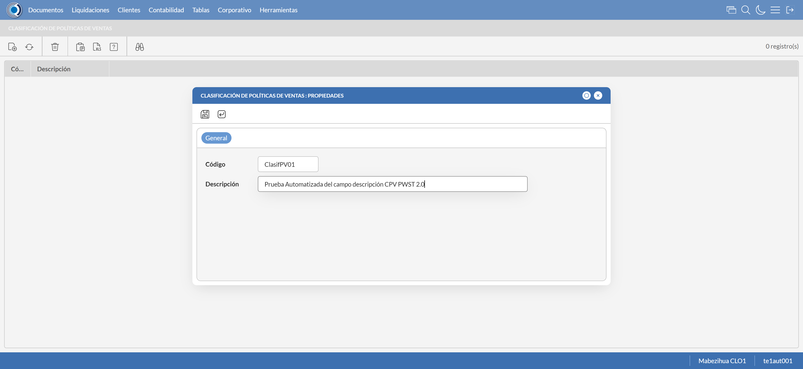 | ||||
test_062: Repetir Registro Clasificacion Politicas |
pt1_64: 2023-01-12 12:53:47,124 - root - INFO - Se presiona el boton 'Refrescar', para crear un nuevo registro igual al anterior.
2023-01-12 12:53:49,228 - root - INFO - Se presiona el boton 'Nuevo', para crear un nuevo registro igual al anterior.
2023-01-12 12:53:49,813 - root - INFO - Se abrio la pantalla para el ingreso de un registro nuevo.
2023-01-12 12:53:49,929 - root - INFO - Ingresa el codigo del nuevo registro
2023-01-12 12:53:50,077 - root - INFO - Ingresa la descripción del nuevo registro
2023-01-12 12:53:50,138 - root - INFO - Se da clic en el boton Guardar; se debe crear un nuevo registro.
2023-01-12 12:53:50,781 - root - INFO - Se da clic en el boton del mensaje de registro duplicado
2023-01-12 12:53:52,783 - root - INFO - Captura: C:\xampp\htdocs\Versiones\automatizaciones\AutoPWST\ScriptAmarillo\report\img screen：20230112_12_53_52.png
2023-01-12 12:53:53,478 - root - INFO - Se presiona el boton 'Cerrar', para cerrar el mensaje de duplicidad de llave primaria
2023-01-12 12:53:53,627 - root - INFO - Se presiona el boton 'Cerrar', para cerrar la ventana
|
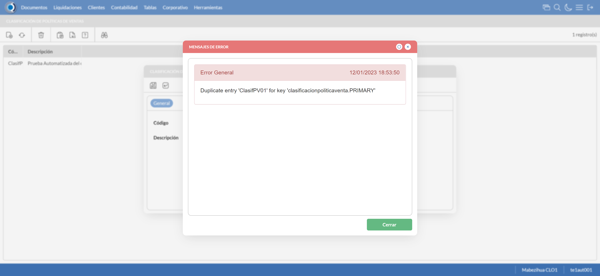 | ||||
test_063: Modifica Clasificacion Politicas |
pt1_65: 2023-01-12 12:53:53,777 - root - INFO - Se presiona el boton 'Refrescar', para crear un nuevo registro igual al anterior.
2023-01-12 12:53:56,441 - root - INFO - Se da clic en el registro creado, para proceder a modificarlo.
2023-01-12 12:53:57,172 - root - INFO - Se modifica el contenido del campo Descripcion
2023-01-12 12:53:57,173 - root - INFO - Captura: C:\xampp\htdocs\Versiones\automatizaciones\AutoPWST\ScriptAmarillo\report\img screen：20230112_12_53_57.png
2023-01-12 12:53:57,710 - root - INFO - Se da clic en el boton Guardar; se debe modificar la informacion del registro.
|
|||||
test_064: Elimina Clasificacion Politicas |
pt1_66: 2023-01-12 12:53:58,003 - root - INFO - Se presiona el boton 'Refrescar', para proceder a eliminar el registro.
2023-01-12 12:54:00,649 - root - INFO - Se da clic en el registro creado, para proceder a eliminarlo.
2023-01-12 12:54:00,746 - root - INFO - Se presiona el boton 'Eliminar', para eliminar el registro.
2023-01-12 12:54:02,749 - root - INFO - Captura: C:\xampp\htdocs\Versiones\automatizaciones\AutoPWST\ScriptAmarillo\report\img screen：20230112_12_54_02.png
2023-01-12 12:54:03,323 - root - INFO - Se confirma el eliminado del registro
2023-01-12 12:54:03,464 - root - INFO - Se presiona el boton 'Refrescar', para crear un nuevo registro igual al anterior.
2023-01-12 12:54:05,605 - root - INFO - Se presiona el boton 'Cerrar', para cerrar la pantalla de Categorias Fiscales.
|
|||||
test_065: Ingresa a pantalla Grupos Politicas |
pt1_67: 2023-01-12 12:54:06,592 - root - INFO - Abre la pantalla de Grupo de Políticas de Venta
2023-01-12 12:54:07,204 - root - INFO - Captura: C:\xampp\htdocs\Versiones\automatizaciones\AutoPWST\ScriptAmarillo\report\img screen：20230112_12_54_07.png
2023-01-12 12:54:07,652 - root - INFO - La pantalla ejecutada es Grupo de Políticas de Venta.
2023-01-12 12:54:29,947 - root - INFO - Se presiona el boton 'Nuevo', para crear un nuevo registro.
|
|||||
test_066: Agregar Perfiles Grupos Politicas |
pt1_68: 2023-01-12 12:54:30,518 - root - INFO - Se abrio la pantalla para el ingreso de un registro nuevo.
2023-01-12 12:54:30,557 - root - INFO - El campo 'Codigo' si se encuentra visible.
2023-01-12 12:54:30,594 - root - INFO - El campo 'Codigo Alternativo' si se encuentra visible.
2023-01-12 12:54:30,631 - root - INFO - El campo 'Descrición' si se encuentra visible.
2023-01-12 12:54:30,718 - root - INFO - El campo 'Tipo de grupo' si se encuentra visible.
2023-01-12 12:54:30,771 - root - INFO - Ingresa el codigo del nuevo registro
2023-01-12 12:54:30,847 - root - INFO - Ingresa el codigo alternativo del nuevo registro
2023-01-12 12:54:30,969 - root - INFO - Ingresa la descripción del nuevo registro
2023-01-12 12:54:33,107 - root - INFO - Captura: C:\xampp\htdocs\Versiones\automatizaciones\AutoPWST\ScriptAmarillo\report\img screen：20230112_12_54_33.png
2023-01-12 12:54:33,625 - root - INFO - Ingresa el tipo de grupo del nuevo registro
2023-01-12 12:54:33,692 - root - INFO - Se hace el cambio de pestaña para continuar con el registro nuevo
2023-01-12 12:54:34,344 - root - INFO - Se presiona el boton 'Nuevo', para crear un nuevo registro.
2023-01-12 12:54:34,934 - root - INFO - El campo 'Artículo' si se encuentra visible.
2023-01-12 12:54:34,973 - root - INFO - El campo 'Equivalencia producto base' si se encuentra visible.
2023-01-12 12:54:36,884 - root - INFO - Se presiona el boton 'Guardar', para guardar el registro.
2023-01-12 12:54:37,160 - root - INFO - Se da clic en el boton Guardar; se debe crear un nuevo registro.
|
|||||
test_067: Repetir Registro Grupos Politicas |
pt1_69: 2023-01-12 12:54:37,443 - root - INFO - Se presiona el boton 'Refrescar', para crear un nuevo registro igual al anterior.
2023-01-12 12:54:37,744 - root - INFO - Se presiona el boton 'Nuevo', para crear un nuevo registro igual al anterior.
2023-01-12 12:54:38,379 - root - INFO - Ingresa el codigo del nuevo registro
2023-01-12 12:54:38,501 - root - INFO - Ingresa el codigo alternativo del nuevo registro
2023-01-12 12:54:38,613 - root - INFO - Ingresa la descripción del nuevo registro
2023-01-12 12:54:38,740 - root - INFO - Ingresa el tipo de grupo del nuevo registro
2023-01-12 12:54:38,875 - root - INFO - Se da clic en el boton Guardar; NO se debe crear un nuevo registro.
2023-01-12 12:54:39,876 - root - INFO - Captura: C:\xampp\htdocs\Versiones\automatizaciones\AutoPWST\ScriptAmarillo\report\img screen：20230112_12_54_39.png
2023-01-12 12:54:45,833 - root - INFO - Se presiona el boton 'Cerrar', para cerrar el mensaje de duplicidad de llave primaria
2023-01-12 12:54:46,837 - root - INFO - Captura: C:\xampp\htdocs\Versiones\automatizaciones\AutoPWST\ScriptAmarillo\report\img screen：20230112_12_54_46.png
2023-01-12 12:54:47,561 - root - INFO - Se presiona el boton 'Cerrar', para cerrar el mensaje de duplicidad de llave primaria
2023-01-12 12:54:48,206 - root - INFO - Se presiona el boton 'Cerrar', para cerrar la ventana
|
|||||
test_068: Modifica Grupos Politicas |
pt1_70: 2023-01-12 12:54:48,362 - root - INFO - Se presiona el boton 'Refrescar', para crear un nuevo registro igual al anterior.
2023-01-12 12:54:54,133 - root - INFO - Se da clic en el registro creado, para proceder a modificarlo.
2023-01-12 12:54:54,295 - root - INFO - Se modifica el contenido del campo código altenativo
2023-01-12 12:54:54,488 - root - INFO - Se modifica el contenido del campo Descripcion
2023-01-12 12:54:56,619 - root - INFO - Captura: C:\xampp\htdocs\Versiones\automatizaciones\AutoPWST\ScriptAmarillo\report\img screen：20230112_12_54_56.png
2023-01-12 12:54:57,106 - root - INFO - Ingresa el tipo de grupo del nuevo registro
2023-01-12 12:54:57,174 - root - INFO - Se hace el cambio de pestaña para continuar con el registro nuevo
2023-01-12 12:54:58,118 - root - INFO - Se da clic en el registro creado, para proceder a modificarlo.
2023-01-12 12:54:58,869 - root - INFO - Se presiona el boton 'Aceptar', para guardar el registro.
2023-01-12 12:54:59,260 - root - INFO - Se da clic en el boton Guardar; se debe modificar la informacion del registro.
|
|||||
test_069: Elimina Grupos Politicas |
pt1_71: 2023-01-12 12:55:01,373 - root - INFO - Se presiona el boton 'Refrescar', para crear un nuevo registro igual al anterior.
2023-01-12 12:55:02,825 - root - INFO - Se da clic en el registro creado, para proceder a modificarlo.
2023-01-12 12:55:03,429 - root - INFO - Se hace el cambio de pestaña para continuar con el registro nuevo
2023-01-12 12:55:04,087 - root - INFO - Se hace el cambio de pestaña para continuar con el registro nuevo
2023-01-12 12:55:04,165 - root - INFO - Se presiona el boton 'Eliminar', para eliminar el registro.
2023-01-12 12:55:04,325 - root - INFO - Se da clic en el boton Guardar; se debe modificar la informacion del registro.
2023-01-12 12:55:04,596 - root - INFO - Se presiona el boton 'Refrescar', para crear un nuevo registro igual al anterior.
2023-01-12 12:55:04,896 - root - INFO - Se da clic en el registro creado, para proceder a modificarlo.
2023-01-12 12:55:04,978 - root - INFO - Se presiona el boton 'Eliminar', para eliminar el registro.
2023-01-12 12:55:05,634 - root - INFO - Se confirma el eliminado del registro
2023-01-12 12:55:05,966 - root - INFO - Se presiona el boton 'Refrescar', para crear un nuevo registro igual al anterior.
2023-01-12 12:55:06,208 - root - INFO - Se presiona el boton 'Cerrar', para cerrar la pantalla de Categorias Fiscales.
|
|
||||
test_070: Ingresa a pantalla Tareas Relevamiento |
pt1_72: 2023-01-12 12:55:07,548 - root - INFO - Abre la pantalla de Tareas Relevamiento Fotográfico
2023-01-12 12:55:08,156 - root - INFO - La pantalla ejecutada es TAREAS DE RELEVAMIENTO FOTOGRÁFICO
2023-01-12 12:55:08,157 - root - INFO - Captura: C:\xampp\htdocs\Versiones\automatizaciones\AutoPWST\ScriptAmarillo\report\img screen：20230112_12_55_08.png
2023-01-12 12:55:18,822 - root - INFO - Se presiona el boton 'Nuevo', para crear un nuevo registro.
|
|||||
test_071: Agregar Perfiles Tareas Relevamiento |
ft1_73: 2023-01-12 12:55:19,414 - root - INFO - Se abrio la pantalla para el ingreso de un registro nuevo.
2023-01-12 12:55:19,451 - root - INFO - El campo 'Codigo' si se encuentra visible.
2023-01-12 12:55:19,491 - root - ERROR - El campo 'Código Alternativo' no se muestra visible, revise si el xpath sigue siendo el mismo, revise la accion anterior si el xpath es el correcto o el tiempo de la accion
2023-01-12 12:55:19,492 - root - INFO - Captura: C:\xampp\htdocs\Versiones\automatizaciones\AutoPWST\ScriptAmarillo\report\img screen：20230112_12_55_19.png
Traceback (most recent call last):
File "C:\xampp\htdocs\Versiones\automatizaciones\AutoPWST\ScriptAmarillo\testCase\ScriptAmarillo.py", line 3417, in test_071
Cierra_ayuda = self.wait.until(conditions.visibility((By.XPATH, TareaRelevamientoConfig.Configuracion.btn_cerrar_ayuda)))
^^^^^^^^^^^^^^^^^^^^^^^^^^^^^^^^^^^^^^^^^^^^^^^^^^^^^^
AttributeError: type object 'Configuracion' has no attribute 'btn_cerrar_ayuda'
|
|||||
test_072: Repetir Registro Tareas Relevamiento |
ft1_74: 2023-01-12 12:55:22,155 - root - ERROR - No se encontró el botón Refrescar, revise si el xpath sigue siendo el mismo, revise la accion anterior si el xpath es el correcto,el tiempo de la accion o si ya existe un registro igual al creado
2023-01-12 12:55:22,156 - root - INFO - Captura: C:\xampp\htdocs\Versiones\automatizaciones\AutoPWST\ScriptAmarillo\report\img screen：20230112_12_55_22.png
Traceback (most recent call last):
File "C:\xampp\htdocs\Versiones\automatizaciones\AutoPWST\ScriptAmarillo\testCase\ScriptAmarillo.py", line 3464, in test_072
Cierra_ayuda = self.wait.until(conditions.visibility((By.XPATH, TareaRelevamientoConfig.Configuracion.btn_cerrar_ayuda)))
^^^^^^^^^^^^^^^^^^^^^^^^^^^^^^^^^^^^^^^^^^^^^^^^^^^^^^
AttributeError: type object 'Configuracion' has no attribute 'btn_cerrar_ayuda'
|
|||||
test_073: Modifica Tareas Relevamiento |
ft1_75: 2023-01-12 12:55:23,740 - root - ERROR - No se encontró el botón Refrescar, revise si el xpath sigue siendo el mismo, revise la accion anterior si el xpath es el correcto o el tiempo de la accion
2023-01-12 12:55:23,743 - root - INFO - Captura: C:\xampp\htdocs\Versiones\automatizaciones\AutoPWST\ScriptAmarillo\report\img screen：20230112_12_55_23.png
Traceback (most recent call last):
File "C:\xampp\htdocs\Versiones\automatizaciones\AutoPWST\ScriptAmarillo\testCase\ScriptAmarillo.py", line 3511, in test_073
Cierra_ayuda = self.wait.until(conditions.visibility((By.XPATH, TareaRelevamientoConfig.Configuracion.btn_cerrar_ayuda)))
^^^^^^^^^^^^^^^^^^^^^^^^^^^^^^^^^^^^^^^^^^^^^^^^^^^^^^
AttributeError: type object 'Configuracion' has no attribute 'btn_cerrar_ayuda'
|
|||||
test_074: Elimina Tareas Relevamiento |
ft1_76: 2023-01-12 12:55:26,383 - root - ERROR - No se encontró el botón Refrescar, revise si el xpath sigue siendo el mismo, revise la accion anterior si el xpath es el correcto o el tiempo de la accion
2023-01-12 12:55:26,384 - root - INFO - Captura: C:\xampp\htdocs\Versiones\automatizaciones\AutoPWST\ScriptAmarillo\report\img screen：20230112_12_55_26.png
Traceback (most recent call last):
File "C:\xampp\htdocs\Versiones\automatizaciones\AutoPWST\ScriptAmarillo\testCase\ScriptAmarillo.py", line 3558, in test_074
Cierra_ayuda = self.wait.until(conditions.visibility((By.XPATH, TareaRelevamientoConfig.Configuracion.btn_cerrar_ayuda)))
^^^^^^^^^^^^^^^^^^^^^^^^^^^^^^^^^^^^^^^^^^^^^^^^^^^^^^
AttributeError: type object 'Configuracion' has no attribute 'btn_cerrar_ayuda'
|
|||||
test_075: Ingresa a pantalla Tareas Relevamiento 2 |
ft1_77: 2023-01-12 12:55:28,215 - root - INFO - Abre la pantalla de Tareas Relevamiento Fotográfico
2023-01-12 12:55:28,258 - root - INFO - La pantalla ejecutada es TAREAS DE RELEVAMIENTO FOTOGRÁFICO
2023-01-12 12:55:28,259 - root - INFO - Captura: C:\xampp\htdocs\Versiones\automatizaciones\AutoPWST\ScriptAmarillo\report\img screen：20230112_12_55_28.png
2023-01-12 12:55:40,002 - root - ERROR - No se encontró el botón Nuevo, revise si el xpath sigue siendo el mismo, revise la accion anterior si el xpath es el correcto o el tiempo de la accion
2023-01-12 12:55:40,005 - root - INFO - Captura: C:\xampp\htdocs\Versiones\automatizaciones\AutoPWST\ScriptAmarillo\report\img screen：20230112_12_55_40.png
Traceback (most recent call last):
File "C:\xampp\htdocs\Versiones\automatizaciones\AutoPWST\ScriptAmarillo\testCase\ScriptAmarillo.py", line 3607, in test_075
Cierra_ayuda = self.wait.until(conditions.visibility((By.XPATH, TareaRelevamiento2Config.Configuracion.btn_cerrar_ayuda)))
^^^^^^^^^^^^^^^^^^^^^^^^^^^^^^^^^^^^^^^^^^^^^^^^^^^^^^^
AttributeError: type object 'Configuracion' has no attribute 'btn_cerrar_ayuda'
|
|||||
test_076: Agregar Perfiles Tareas Relevamiento 2 |
ft1_78: 2023-01-12 12:55:40,546 - root - INFO - Se abrio la pantalla para el ingreso de un registro nuevo.
2023-01-12 12:55:40,574 - root - INFO - El campo 'Codigo' si se encuentra visible.
2023-01-12 12:55:40,600 - root - ERROR - El campo 'Código Alternativo' no se muestra visible, revise si el xpath sigue siendo el mismo, revise la accion anterior si el xpath es el correcto o el tiempo de la accion
2023-01-12 12:55:40,601 - root - INFO - Captura: C:\xampp\htdocs\Versiones\automatizaciones\AutoPWST\ScriptAmarillo\report\img screen：20230112_12_55_40.png
Traceback (most recent call last):
File "C:\xampp\htdocs\Versiones\automatizaciones\AutoPWST\ScriptAmarillo\testCase\ScriptAmarillo.py", line 3654, in test_076
Cierra_ayuda = self.wait.until(conditions.visibility((By.XPATH, TareaRelevamiento2Config.Configuracion.btn_cerrar_ayuda)))
^^^^^^^^^^^^^^^^^^^^^^^^^^^^^^^^^^^^^^^^^^^^^^^^^^^^^^^
AttributeError: type object 'Configuracion' has no attribute 'btn_cerrar_ayuda'
|
|||||
test_077: Repetir Registro Tareas Relevamiento 2 |
ft1_79: 2023-01-12 12:55:42,148 - root - ERROR - No se encontró el botón Refrescar, revise si el xpath sigue siendo el mismo, revise la accion anterior si el xpath es el correcto,el tiempo de la accion o si ya existe un registro ya creado igual
2023-01-12 12:55:42,149 - root - INFO - Captura: C:\xampp\htdocs\Versiones\automatizaciones\AutoPWST\ScriptAmarillo\report\img screen：20230112_12_55_42.png
Traceback (most recent call last):
File "C:\xampp\htdocs\Versiones\automatizaciones\AutoPWST\ScriptAmarillo\testCase\ScriptAmarillo.py", line 3701, in test_077
Cierra_ayuda = self.wait.until(conditions.visibility((By.XPATH, TareaRelevamiento2Config.Configuracion.btn_cerrar_ayuda)))
^^^^^^^^^^^^^^^^^^^^^^^^^^^^^^^^^^^^^^^^^^^^^^^^^^^^^^^
AttributeError: type object 'Configuracion' has no attribute 'btn_cerrar_ayuda'
|

|
||||
test_078: Modifica Tareas Relevamiento 2 |
ft1_80: 2023-01-12 12:55:43,730 - root - ERROR - No se encontró el botón Refrescar, revise si el xpath sigue siendo el mismo, revise la accion anterior si el xpath es el correcto o el tiempo de la accion
2023-01-12 12:55:43,731 - root - INFO - Captura: C:\xampp\htdocs\Versiones\automatizaciones\AutoPWST\ScriptAmarillo\report\img screen：20230112_12_55_43.png
Traceback (most recent call last):
File "C:\xampp\htdocs\Versiones\automatizaciones\AutoPWST\ScriptAmarillo\testCase\ScriptAmarillo.py", line 3748, in test_078
Cierra_ayuda = self.wait.until(conditions.visibility((By.XPATH, TareaRelevamiento2Config.Configuracion.btn_cerrar_ayuda)))
^^^^^^^^^^^^^^^^^^^^^^^^^^^^^^^^^^^^^^^^^^^^^^^^^^^^^^^
AttributeError: type object 'Configuracion' has no attribute 'btn_cerrar_ayuda'
|

|
||||
test_079: Elimina Tareas Relevamiento 2 |
ft1_81: 2023-01-12 12:55:45,272 - root - ERROR - No se encontró el botón Refrescar, revise si el xpath sigue siendo el mismo, revise la accion anterior si el xpath es el correcto o el tiempo de la accion
2023-01-12 12:55:45,274 - root - INFO - Captura: C:\xampp\htdocs\Versiones\automatizaciones\AutoPWST\ScriptAmarillo\report\img screen：20230112_12_55_45.png
Traceback (most recent call last):
File "C:\xampp\htdocs\Versiones\automatizaciones\AutoPWST\ScriptAmarillo\testCase\ScriptAmarillo.py", line 3795, in test_079
Cierra_ayuda = self.wait.until(conditions.visibility((By.XPATH, TareaRelevamiento2Config.Configuracion.btn_cerrar_ayuda)))
^^^^^^^^^^^^^^^^^^^^^^^^^^^^^^^^^^^^^^^^^^^^^^^^^^^^^^^
AttributeError: type object 'Configuracion' has no attribute 'btn_cerrar_ayuda'
|

|
||||
test_080: Ingresa a pantalla Tipos Pop Up |
ft1_82: 2023-01-12 12:55:46,886 - root - INFO - Abre la pantalla de Tipos de PopUp
2023-01-12 12:55:46,929 - root - ERROR - La pantalla ejecutada no es correcta, validar que la acción anterior haya finalizado, que el nombre de la pantalla sea el correcto o que la página no presente lentitud
2023-01-12 12:55:46,930 - root - INFO - Captura: C:\xampp\htdocs\Versiones\automatizaciones\AutoPWST\ScriptAmarillo\report\img screen：20230112_12_55_46.png
Traceback (most recent call last):
File "C:\xampp\htdocs\Versiones\automatizaciones\AutoPWST\ScriptAmarillo\testCase\ScriptAmarillo.py", line 3844, in test_080
Cierra_ayuda = self.wait.until(conditions.visibility((By.XPATH, TiposPopUpConfig.Configuracion.btn_cerrar_ayuda)))
^^^^^^^^^^^^^^^^^^^^^^^^^^^^^^^^^^^^^^^^^^^^^^^
AttributeError: type object 'Configuracion' has no attribute 'btn_cerrar_ayuda'
|
|||||
test_081: Agregar Perfiles Tipos Pop Up |
ft1_83: 2023-01-12 12:55:47,564 - root - ERROR - La pantalla ejecutada no es correcta, validar que la acción anterior haya finalizado, que el nombre de la pantalla sea el correcto o que la página no presente lentitud
2023-01-12 12:55:47,564 - root - INFO - Captura: C:\xampp\htdocs\Versiones\automatizaciones\AutoPWST\ScriptAmarillo\report\img screen：20230112_12_55_47.png
Traceback (most recent call last):
File "C:\xampp\htdocs\Versiones\automatizaciones\AutoPWST\ScriptAmarillo\testCase\ScriptAmarillo.py", line 3891, in test_081
Cierra_ayuda = self.wait.until(conditions.visibility((By.XPATH, TiposPopUpConfig.Configuracion.btn_cerrar_ayuda)))
^^^^^^^^^^^^^^^^^^^^^^^^^^^^^^^^^^^^^^^^^^^^^^^
AttributeError: type object 'Configuracion' has no attribute 'btn_cerrar_ayuda'
|
|||||
test_082: Repetir Registro Tipos Pop Up |
ft1_84: 2023-01-12 12:55:49,102 - root - ERROR - No se dió click en el botón Refrescar, validar que la acción anterior haya finalizado, que el xpath sea el correcto o que la página no presente lentitud
2023-01-12 12:55:49,104 - root - INFO - Captura: C:\xampp\htdocs\Versiones\automatizaciones\AutoPWST\ScriptAmarillo\report\img screen：20230112_12_55_49.png
Traceback (most recent call last):
File "C:\xampp\htdocs\Versiones\automatizaciones\AutoPWST\ScriptAmarillo\testCase\ScriptAmarillo.py", line 3938, in test_082
Cierra_ayuda = self.wait.until(conditions.visibility((By.XPATH, TiposPopUpConfig.Configuracion.btn_cerrar_ayuda)))
^^^^^^^^^^^^^^^^^^^^^^^^^^^^^^^^^^^^^^^^^^^^^^^
AttributeError: type object 'Configuracion' has no attribute 'btn_cerrar_ayuda'
|

|
||||
test_083: Modifica Tipos Pop Up |
ft1_85: 2023-01-12 12:55:50,685 - root - ERROR - No se dió click en el botón Refrescar, validar que la acción anterior haya finalizado, que el xpath sea el correcto o que la página no presente lentitud
2023-01-12 12:55:53,688 - root - INFO - Captura: C:\xampp\htdocs\Versiones\automatizaciones\AutoPWST\ScriptAmarillo\report\img screen：20230112_12_55_53.png
Traceback (most recent call last):
File "C:\xampp\htdocs\Versiones\automatizaciones\AutoPWST\ScriptAmarillo\testCase\ScriptAmarillo.py", line 3985, in test_083
Cierra_ayuda = self.wait.until(conditions.visibility((By.XPATH, TiposPopUpConfig.Configuracion.btn_cerrar_ayuda)))
^^^^^^^^^^^^^^^^^^^^^^^^^^^^^^^^^^^^^^^^^^^^^^^
AttributeError: type object 'Configuracion' has no attribute 'btn_cerrar_ayuda'
|
|||||
test_084: Elimina Tipos Pop Up |
ft1_86: 2023-01-12 12:55:55,305 - root - ERROR - No se dió click en el botón Refrescar, validar que la acción anterior haya finalizado, que el xpath sea el correcto o que la página no presente lentitud
2023-01-12 12:55:58,308 - root - INFO - Captura: C:\xampp\htdocs\Versiones\automatizaciones\AutoPWST\ScriptAmarillo\report\img screen：20230112_12_55_58.png
Traceback (most recent call last):
File "C:\xampp\htdocs\Versiones\automatizaciones\AutoPWST\ScriptAmarillo\testCase\ScriptAmarillo.py", line 4032, in test_084
Cierra_ayuda = self.wait.until(conditions.visibility((By.XPATH, TiposPopUpConfig.Configuracion.btn_cerrar_ayuda)))
^^^^^^^^^^^^^^^^^^^^^^^^^^^^^^^^^^^^^^^^^^^^^^^
AttributeError: type object 'Configuracion' has no attribute 'btn_cerrar_ayuda'
|

|
||||
test_085: Ingresa a pantalla Vehiculos |
ft1_87: 2023-01-12 12:55:59,488 - root - INFO - Abre la pantalla de Vehiculos
2023-01-12 12:55:59,532 - root - ERROR - La pantalla ejecutada no es correcta, revise si el xpath sigue siendo el mismo, para mas detalles del error consulte el reporte
2023-01-12 12:55:59,533 - root - INFO - Captura: C:\xampp\htdocs\Versiones\automatizaciones\AutoPWST\ScriptAmarillo\report\img screen：20230112_12_55_59.png
Traceback (most recent call last):
File "C:\xampp\htdocs\Versiones\automatizaciones\AutoPWST\ScriptAmarillo\testCase\ScriptAmarillo.py", line 4081, in test_085
Cierra_ayuda = self.wait.until(conditions.visibility((By.XPATH, VehiculosConfig.Configuracion.btn_cerrar_ayuda)))
^^^^^^^^^^^^^^^^^^^^^^^^^^^^^^^^^^^^^^^^^^^^^^
AttributeError: type object 'Configuracion' has no attribute 'btn_cerrar_ayuda'
|
|||||
test_086: Agregar Perfiles Vehiculos |
ft1_88: 2023-01-12 12:56:00,138 - root - ERROR - La pantalla ejecutada no es correcta, revise si el xpath sigue siendo el mismo, para mas detalles del error consulte el reporte
2023-01-12 12:56:00,138 - root - INFO - Captura: C:\xampp\htdocs\Versiones\automatizaciones\AutoPWST\ScriptAmarillo\report\img screen：20230112_12_56_00.png
Traceback (most recent call last):
File "C:\xampp\htdocs\Versiones\automatizaciones\AutoPWST\ScriptAmarillo\testCase\ScriptAmarillo.py", line 4128, in test_086
Cierra_ayuda = self.wait.until(conditions.visibility((By.XPATH, VehiculosConfig.Configuracion.btn_cerrar_ayuda)))
^^^^^^^^^^^^^^^^^^^^^^^^^^^^^^^^^^^^^^^^^^^^^^
AttributeError: type object 'Configuracion' has no attribute 'btn_cerrar_ayuda'
|

|
||||
test_087: Repetir Registro Vehiculos |
ft1_89: 2023-01-12 12:56:01,717 - root - ERROR - No se encontró el botón Refrescar, revise si el xpath sigue siendo el mismo, para mas detalles del error consulte el reporte
2023-01-12 12:56:01,718 - root - INFO - Captura: C:\xampp\htdocs\Versiones\automatizaciones\AutoPWST\ScriptAmarillo\report\img screen：20230112_12_56_01.png
Traceback (most recent call last):
File "C:\xampp\htdocs\Versiones\automatizaciones\AutoPWST\ScriptAmarillo\testCase\ScriptAmarillo.py", line 4175, in test_087
Cierra_ayuda = self.wait.until(conditions.visibility((By.XPATH, VehiculosConfig.Configuracion.btn_cerrar_ayuda)))
^^^^^^^^^^^^^^^^^^^^^^^^^^^^^^^^^^^^^^^^^^^^^^
AttributeError: type object 'Configuracion' has no attribute 'btn_cerrar_ayuda'
|

|
||||
test_088: Modifica Tipos Pop Up |
ft1_90: 2023-01-12 12:56:03,287 - root - ERROR - No se encontró el botón Refrescar, revise si el xpath sigue siendo el mismo, para mas detalles del error consulte el reporte
2023-01-12 12:56:03,289 - root - INFO - Captura: C:\xampp\htdocs\Versiones\automatizaciones\AutoPWST\ScriptAmarillo\report\img screen：20230112_12_56_03.png
Traceback (most recent call last):
File "C:\xampp\htdocs\Versiones\automatizaciones\AutoPWST\ScriptAmarillo\testCase\ScriptAmarillo.py", line 4222, in test_088
Cierra_ayuda = self.wait.until(conditions.visibility((By.XPATH, VehiculosConfig.Configuracion.btn_cerrar_ayuda)))
^^^^^^^^^^^^^^^^^^^^^^^^^^^^^^^^^^^^^^^^^^^^^^
AttributeError: type object 'Configuracion' has no attribute 'btn_cerrar_ayuda'
|

|
||||
test_089: Elimina Vehiculos |
ft1_91: 2023-01-12 12:56:04,902 - root - ERROR - No se encontró el botón Refrescar, revise si el xpath sigue siendo el mismo, para mas detalles del error consulte el reporte
2023-01-12 12:56:04,905 - root - INFO - Captura: C:\xampp\htdocs\Versiones\automatizaciones\AutoPWST\ScriptAmarillo\report\img screen：20230112_12_56_04.png
Traceback (most recent call last):
File "C:\xampp\htdocs\Versiones\automatizaciones\AutoPWST\ScriptAmarillo\testCase\ScriptAmarillo.py", line 4269, in test_089
Cierra_ayuda = self.wait.until(conditions.visibility((By.XPATH, VehiculosConfig.Configuracion.btn_cerrar_ayuda)))
^^^^^^^^^^^^^^^^^^^^^^^^^^^^^^^^^^^^^^^^^^^^^^
AttributeError: type object 'Configuracion' has no attribute 'btn_cerrar_ayuda'
|

|
||||
test_090: Ingresa a pantalla WorkFlows |
ft1_92: 2023-01-12 12:56:06,441 - root - INFO - Abre la pantalla de Worksflow
2023-01-12 12:56:06,483 - root - ERROR - La pantalla ejecutada no es correcta, validar que la acción anterior haya finalizado, que el nombre de la sea el correcto o que la página no presente lentitud
2023-01-12 12:56:09,486 - root - INFO - Captura: C:\xampp\htdocs\Versiones\automatizaciones\AutoPWST\ScriptAmarillo\report\img screen：20230112_12_56_09.png
Traceback (most recent call last):
File "C:\xampp\htdocs\Versiones\automatizaciones\AutoPWST\ScriptAmarillo\testCase\ScriptAmarillo.py", line 4318, in test_090
Cierra_ayuda = self.wait.until(conditions.visibility((By.XPATH, WorkFlowsConfig.Configuracion.btn_cerrar_ayuda)))
^^^^^^^^^^^^^^^^^^^^^^^^^^^^^^^^^^^^^^^^^^^^^^
AttributeError: type object 'Configuracion' has no attribute 'btn_cerrar_ayuda'
|

|
||||
test_091: Agregar Perfiles WorkFlows |
ft1_93: 2023-01-12 12:56:10,024 - root - ERROR - La pantalla ejecutada no es correcta, validar que la acción anterior haya finalizado, que el nombre de la pantalla sea el correcto o que la página no presente lentitud
2023-01-12 12:56:13,026 - root - INFO - Captura: C:\xampp\htdocs\Versiones\automatizaciones\AutoPWST\ScriptAmarillo\report\img screen：20230112_12_56_13.png
Traceback (most recent call last):
File "C:\xampp\htdocs\Versiones\automatizaciones\AutoPWST\ScriptAmarillo\testCase\ScriptAmarillo.py", line 4365, in test_091
Cierra_ayuda = self.wait.until(conditions.visibility((By.XPATH, WorkFlowsConfig.Configuracion.btn_cerrar_ayuda)))
^^^^^^^^^^^^^^^^^^^^^^^^^^^^^^^^^^^^^^^^^^^^^^
AttributeError: type object 'Configuracion' has no attribute 'btn_cerrar_ayuda'
|

|
||||
test_092: Repetir Registro WorkFlows |
ft1_94: 2023-01-12 12:56:14,581 - root - ERROR - No se dió click en el botón Refrescar, validar que la acción anterior haya finalizado, que el xpath sea el correcto o que la página no presente lentitud
2023-01-12 12:56:14,582 - root - INFO - Captura: C:\xampp\htdocs\Versiones\automatizaciones\AutoPWST\ScriptAmarillo\report\img screen：20230112_12_56_14.png
Traceback (most recent call last):
File "C:\xampp\htdocs\Versiones\automatizaciones\AutoPWST\ScriptAmarillo\testCase\ScriptAmarillo.py", line 4412, in test_092
Cierra_ayuda = self.wait.until(conditions.visibility((By.XPATH, WorkFlowsConfig.Configuracion.btn_cerrar_ayuda)))
^^^^^^^^^^^^^^^^^^^^^^^^^^^^^^^^^^^^^^^^^^^^^^
AttributeError: type object 'Configuracion' has no attribute 'btn_cerrar_ayuda'
|
|||||
test_093: Modifica Tipos Pop Up |
ft1_95: 2023-01-12 12:56:16,146 - root - ERROR - No se dió click el botón Refrescar, validar que la acción anterior haya finalizado, que el xpath sea el correcto o que la página no presente lentitud
2023-01-12 12:56:16,147 - root - INFO - Captura: C:\xampp\htdocs\Versiones\automatizaciones\AutoPWST\ScriptAmarillo\report\img screen：20230112_12_56_16.png
Traceback (most recent call last):
File "C:\xampp\htdocs\Versiones\automatizaciones\AutoPWST\ScriptAmarillo\testCase\ScriptAmarillo.py", line 4459, in test_093
Cierra_ayuda = self.wait.until(conditions.visibility((By.XPATH, WorkFlowsConfig.Configuracion.btn_cerrar_ayuda)))
^^^^^^^^^^^^^^^^^^^^^^^^^^^^^^^^^^^^^^^^^^^^^^
AttributeError: type object 'Configuracion' has no attribute 'btn_cerrar_ayuda'
|

|
||||
test_094: Elimina WorkFlows |
ft1_96: 2023-01-12 12:56:17,757 - root - ERROR - No se dió click el botón Refrescar, validar que la acción anterior haya finalizado, que el xpath sea el correcto o que la página no presente lentitud
2023-01-12 12:56:17,760 - root - INFO - Captura: C:\xampp\htdocs\Versiones\automatizaciones\AutoPWST\ScriptAmarillo\report\img screen：20230112_12_56_17.png
Traceback (most recent call last):
File "C:\xampp\htdocs\Versiones\automatizaciones\AutoPWST\ScriptAmarillo\testCase\ScriptAmarillo.py", line 4506, in test_094
Cierra_ayuda = self.wait.until(conditions.visibility((By.XPATH, WorkFlowsConfig.Configuracion.btn_cerrar_ayuda)))
^^^^^^^^^^^^^^^^^^^^^^^^^^^^^^^^^^^^^^^^^^^^^^
AttributeError: type object 'Configuracion' has no attribute 'btn_cerrar_ayuda'
|

|
||||
test_095: Ingresa a pantalla Objetivos Diarios 2 |
ft1_97: 2023-01-12 12:56:19,360 - root - INFO - Abre la pantalla de Objetivos Diarios
2023-01-12 12:56:19,456 - root - ERROR - La pantalla ejecutada no es correcta, validar que la acción anterior haya finalizado, que el nombre de la pantalla sea el correcto o que la página no presente lentitud
2023-01-12 12:56:19,457 - root - INFO - Captura: C:\xampp\htdocs\Versiones\automatizaciones\AutoPWST\ScriptAmarillo\report\img screen：20230112_12_56_19.png
2023-01-12 12:56:46,655 - root - ERROR - No se encontró el botón Cerrar, revise si el xpath sigue siendo el mismo, para mas detalles del error consulte el reporte
2023-01-12 12:56:49,659 - root - INFO - Captura: C:\xampp\htdocs\Versiones\automatizaciones\AutoPWST\ScriptAmarillo\report\img screen：20230112_12_56_49.png
Traceback (most recent call last):
File "C:\xampp\htdocs\Versiones\automatizaciones\AutoPWST\ScriptAmarillo\testCase\ScriptAmarillo.py", line 4594, in test_095
raise Exception()
Exception
|
|||||
test_096: Agregar Objetivos Diarios 2 |
ft1_98: 2023-01-12 12:56:50,192 - root - ERROR - La pantalla anterior fallo por lo que esta no funcionara, para mas detalles del error consulte el reporte
Traceback (most recent call last):
File "C:\xampp\htdocs\Versiones\automatizaciones\AutoPWST\ScriptAmarillo\testCase\ScriptAmarillo.py", line 4651, in test_096
raise Exception()
Exception
|
|
||||
test_097: Repetir Registro Objetivos Diarios 2 |
ft1_99: 2023-01-12 12:56:50,193 - root - ERROR - La pantalla anterior fallo por lo que esta no funcionara, para mas detalles del error consulte el reporte
Traceback (most recent call last):
File "C:\xampp\htdocs\Versiones\automatizaciones\AutoPWST\ScriptAmarillo\testCase\ScriptAmarillo.py", line 4705, in test_097
raise Exception()
Exception
|
|
||||
test_098: Modifica Objetivos Diarios 2 |
ft1_100: 2023-01-12 12:56:50,194 - root - ERROR - La pantalla anterior fallo por lo que esta no funcionara, para mas detalles del error consulte el reporte
Traceback (most recent call last):
File "C:\xampp\htdocs\Versiones\automatizaciones\AutoPWST\ScriptAmarillo\testCase\ScriptAmarillo.py", line 4759, in test_098
raise Exception()
Exception
|
|
||||
test_099: Elimina Objetivos Diarios 2 |
ft1_101: 2023-01-12 12:56:50,195 - root - ERROR - La pantalla anterior fallo por lo que esta no funcionara, para mas detalles del error consulte el reporte
Traceback (most recent call last):
File "C:\xampp\htdocs\Versiones\automatizaciones\AutoPWST\ScriptAmarillo\testCase\ScriptAmarillo.py", line 4813, in test_099
raise Exception()
Exception
|
|
||||
test_100: Ingresa a pantalla Tipo Vendedor |
ft1_102: 2023-01-12 12:56:50,196 - root - ERROR - La pantalla anterior fallo por lo que esta no funcionara, para mas detalles del error consulte el reporte
Traceback (most recent call last):
File "C:\xampp\htdocs\Versiones\automatizaciones\AutoPWST\ScriptAmarillo\testCase\ScriptAmarillo.py", line 4867, in test_100
raise Exception()
Exception
|
|
||||
test_101: Agregar Tipo Vendedor |
ft1_103: 2023-01-12 12:56:50,196 - root - ERROR - La pantalla anterior fallo por lo que esta no funcionara, para mas detalles del error consulte el reporte
Traceback (most recent call last):
File "C:\xampp\htdocs\Versiones\automatizaciones\AutoPWST\ScriptAmarillo\testCase\ScriptAmarillo.py", line 4921, in test_101
raise Exception()
Exception
|
|
||||
test_103: Modifica Tipo Vendedor |
ft1_104: 2023-01-12 12:56:50,197 - root - ERROR - La pantalla anterior fallo por lo que esta no funcionara, para mas detalles del error consulte el reporte
Traceback (most recent call last):
File "C:\xampp\htdocs\Versiones\automatizaciones\AutoPWST\ScriptAmarillo\testCase\ScriptAmarillo.py", line 5029, in test_103
raise Exception()
Exception
|
|
||||
test_104: Elimina Tipo Vendedor |
ft1_105: 2023-01-12 12:56:50,198 - root - ERROR - La pantalla anterior fallo por lo que esta no funcionara, para mas detalles del error consulte el reporte
Traceback (most recent call last):
File "C:\xampp\htdocs\Versiones\automatizaciones\AutoPWST\ScriptAmarillo\testCase\ScriptAmarillo.py", line 5083, in test_104
raise Exception()
Exception
|
|
||||
test_105: Ingresa a pantalla Objetivos Diarios 3 |
ft1_106: 2023-01-12 12:56:50,199 - root - ERROR - La pantalla anterior fallo por lo que esta no funcionara, para mas detalles del error consulte el reporte
Traceback (most recent call last):
File "C:\xampp\htdocs\Versiones\automatizaciones\AutoPWST\ScriptAmarillo\testCase\ScriptAmarillo.py", line 5137, in test_105
raise Exception()
Exception
|
|
||||
test_106: Agregar Perfiles Moviles |
ft1_107: 2023-01-12 12:56:50,200 - root - ERROR - La pantalla anterior fallo por lo que esta no funcionara, para mas detalles del error consulte el reporte
Traceback (most recent call last):
File "C:\xampp\htdocs\Versiones\automatizaciones\AutoPWST\ScriptAmarillo\testCase\ScriptAmarillo.py", line 5191, in test_106
raise Exception()
Exception
|
|
||||
test_107: Repetir Registro Perfiles Moviles |
ft1_108: 2023-01-12 12:56:50,200 - root - ERROR - La pantalla anterior fallo por lo que esta no funcionara, para mas detalles del error consulte el reporte
Traceback (most recent call last):
File "C:\xampp\htdocs\Versiones\automatizaciones\AutoPWST\ScriptAmarillo\testCase\ScriptAmarillo.py", line 5245, in test_107
raise Exception()
Exception
|
|
||||
test_108: Modifica Perfiles Moviles |
ft1_109: 2023-01-12 12:56:50,201 - root - ERROR - La pantalla anterior fallo por lo que esta no funcionara, para mas detalles del error consulte el reporte
Traceback (most recent call last):
File "C:\xampp\htdocs\Versiones\automatizaciones\AutoPWST\ScriptAmarillo\testCase\ScriptAmarillo.py", line 5299, in test_108
raise Exception()
Exception
|
|
||||
test_109: Elimina Perfiles Moviles |
ft1_110: 2023-01-12 12:56:50,202 - root - ERROR - La pantalla anterior fallo por lo que esta no funcionara, para mas detalles del error consulte el reporte
Traceback (most recent call last):
File "C:\xampp\htdocs\Versiones\automatizaciones\AutoPWST\ScriptAmarillo\testCase\ScriptAmarillo.py", line 5353, in test_109
raise Exception()
Exception
|
|
||||
test_110: Ingresa a pantalla Grupos Politicas 2 |
ft1_111: 2023-01-12 12:56:51,242 - root - INFO - Abre la pantalla de Grupo de Políticas de Venta
2023-01-12 12:56:51,280 - root - ERROR - La pantalla ejecutada no es correcta, validar que la acción anterior haya finalizado,que el xpath sea el correcto o que la página no presente lentitud
2023-01-12 12:56:51,281 - root - INFO - Captura: C:\xampp\htdocs\Versiones\automatizaciones\AutoPWST\ScriptAmarillo\report\img screen：20230112_12_56_51.png
2023-01-12 12:57:12,786 - root - ERROR - No se encontró el botón Cerrar, revise si el xpath sigue siendo el mismo, para mas detalles del error consulte el reporte
2023-01-12 12:57:15,788 - root - INFO - Captura: C:\xampp\htdocs\Versiones\automatizaciones\AutoPWST\ScriptAmarillo\report\img screen：20230112_12_57_15.png
Traceback (most recent call last):
File "C:\xampp\htdocs\Versiones\automatizaciones\AutoPWST\ScriptAmarillo\testCase\ScriptAmarillo.py", line 5399, in test_110
raise Exception()
Exception
|
|||||
test_111: Agregar Perfiles Grupos Politicas 2 |
ft1_112: 2023-01-12 12:57:16,292 - root - ERROR - La pantalla anterior fallo por lo que esta no funcionara, para mas detalles del error consulte el reporte
Traceback (most recent call last):
File "C:\xampp\htdocs\Versiones\automatizaciones\AutoPWST\ScriptAmarillo\testCase\ScriptAmarillo.py", line 5449, in test_111
raise Exception()
Exception
|
|
||||
test_112: Repetir Registro Grupos Politicas 2 |
ft1_113: 2023-01-12 12:57:16,293 - root - ERROR - La pantalla anterior fallo por lo que esta no funcionara, para mas detalles del error consulte el reporte
Traceback (most recent call last):
File "C:\xampp\htdocs\Versiones\automatizaciones\AutoPWST\ScriptAmarillo\testCase\ScriptAmarillo.py", line 5496, in test_112
raise Exception()
Exception
|
|
||||
test_113: Modifica Grupos Politicas |
ft1_114: 2023-01-12 12:57:16,294 - root - ERROR - La pantalla anterior fallo por lo que esta no funcionara, para mas detalles del error consulte el reporte
Traceback (most recent call last):
File "C:\xampp\htdocs\Versiones\automatizaciones\AutoPWST\ScriptAmarillo\testCase\ScriptAmarillo.py", line 5543, in test_113
raise Exception()
Exception
|
|
||||
test_114: Elimina Grupos Politicas 2 |
ft1_115: 2023-01-12 12:57:16,295 - root - ERROR - La pantalla anterior fallo por lo que esta no funcionara, para mas detalles del error consulte el reporte
Traceback (most recent call last):
File "C:\xampp\htdocs\Versiones\automatizaciones\AutoPWST\ScriptAmarillo\testCase\ScriptAmarillo.py", line 5590, in test_114
raise Exception()
Exception
|
|
||||
test_115: Ingresa a pantalla Tipo Vendedor |
ft1_116: 2023-01-12 12:57:16,296 - root - ERROR - La pantalla anterior fallo por lo que esta no funcionara, para mas detalles del error consulte el reporte
Traceback (most recent call last):
File "C:\xampp\htdocs\Versiones\automatizaciones\AutoPWST\ScriptAmarillo\testCase\ScriptAmarillo.py", line 5624, in test_115
raise Exception()
Exception
|
|
||||
test_116: Agregar Tipo Vendedor |
ft1_117: 2023-01-12 12:57:16,297 - root - ERROR - La pantalla anterior fallo por lo que esta no funcionara, para mas detalles del error consulte el reporte
Traceback (most recent call last):
File "C:\xampp\htdocs\Versiones\automatizaciones\AutoPWST\ScriptAmarillo\testCase\ScriptAmarillo.py", line 5658, in test_116
raise Exception()
Exception
|
|
||||
test_117: Repetir Registro Tipo Vendedor |
ft1_118: 2023-01-12 12:57:16,297 - root - ERROR - La pantalla anterior fallo por lo que esta no funcionara, para mas detalles del error consulte el reporte
Traceback (most recent call last):
File "C:\xampp\htdocs\Versiones\automatizaciones\AutoPWST\ScriptAmarillo\testCase\ScriptAmarillo.py", line 5692, in test_117
raise Exception()
Exception
|
|
||||
test_118: Modifica Tipo Vendedor |
ft1_119: 2023-01-12 12:57:16,298 - root - ERROR - La pantalla anterior fallo por lo que esta no funcionara, para mas detalles del error consulte el reporte
Traceback (most recent call last):
File "C:\xampp\htdocs\Versiones\automatizaciones\AutoPWST\ScriptAmarillo\testCase\ScriptAmarillo.py", line 5726, in test_118
raise Exception()
Exception
|
|
||||
test_119: Elimina Tipo Vendedor |
ft1_120: 2023-01-12 12:57:16,299 - root - ERROR - La pantalla anterior fallo por lo que esta no funcionara, para mas detalles del error consulte el reporte
Traceback (most recent call last):
File "C:\xampp\htdocs\Versiones\automatizaciones\AutoPWST\ScriptAmarillo\testCase\ScriptAmarillo.py", line 5760, in test_119
raise Exception()
Exception
|
|
||||
test_120: Ingresa a pantalla Vendedor |
ft1_121: 2023-01-12 12:57:16,300 - root - ERROR - La pantalla anterior fallo por lo que esta no funcionara, para mas detalles del error consulte el reporte
Traceback (most recent call last):
File "C:\xampp\htdocs\Versiones\automatizaciones\AutoPWST\ScriptAmarillo\testCase\ScriptAmarillo.py", line 5794, in test_120
raise Exception()
Exception
|
|
||||
test_121: Agregar Vendedor |
ft1_122: 2023-01-12 12:57:16,300 - root - ERROR - La pantalla anterior fallo por lo que esta no funcionara, para mas detalles del error consulte el reporte
Traceback (most recent call last):
File "C:\xampp\htdocs\Versiones\automatizaciones\AutoPWST\ScriptAmarillo\testCase\ScriptAmarillo.py", line 5828, in test_121
raise Exception()
Exception
|
|
||||
test_122: Repetir Registro Vendedor |
ft1_123: 2023-01-12 12:57:16,301 - root - ERROR - La pantalla anterior fallo por lo que esta no funcionara, para mas detalles del error consulte el reporte
Traceback (most recent call last):
File "C:\xampp\htdocs\Versiones\automatizaciones\AutoPWST\ScriptAmarillo\testCase\ScriptAmarillo.py", line 5862, in test_122
raise Exception()
Exception
|
|
||||
test_123: Modifica Vendedor |
ft1_124: 2023-01-12 12:57:16,302 - root - ERROR - La pantalla anterior fallo por lo que esta no funcionara, para mas detalles del error consulte el reporte
Traceback (most recent call last):
File "C:\xampp\htdocs\Versiones\automatizaciones\AutoPWST\ScriptAmarillo\testCase\ScriptAmarillo.py", line 5896, in test_123
raise Exception()
Exception
|
|
||||
test_124: Elimina Vendedor |
ft1_125: 2023-01-12 12:57:16,303 - root - ERROR - La pantalla anterior fallo por lo que esta no funcionara, para mas detalles del error consulte el reporte
Traceback (most recent call last):
File "C:\xampp\htdocs\Versiones\automatizaciones\AutoPWST\ScriptAmarillo\testCase\ScriptAmarillo.py", line 5930, in test_124
raise Exception()
Exception
|
|
||||
test_125: Cerrar_Navegador |
pt1_126: 2023-01-12 12:57:20,759 - root - INFO - Se cierra chrome
|
|
||||
| Caso de prueba | 126 | 65 | 0 | 61 | Taza de resultado：51.59% | |